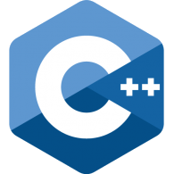

Lenguaje C++

Contenidos
- Introducción al C++
- Primeros pasos en C++
- Bases del lenguaje C++ (variables, operadores, tipos)
- Bases del lenguaje C++ (control de flujo)
- Prácticas I
- Arrays y punteros
- Prácticas II
- Programación Orientada a Objetos
- Prácticas III, la lista enlazada
- Sobrecarga de operadores
- Agregación, composición, inicializadores de constructor
- Herencia
- Funciones virtuales
- Trabajando con ficheros
- Plantillas (templates)
- Excepciones
- STL
Objetivos
- El objetivo del curso es el de dotar al alumno de las competencias necesarias para entender el lenguaje C++ y realizar aplicaciones orientadas a objetos
1. Introducción al C++
- Historia
- Versiones de C++
- Filosofía de la programación orientada a objetos
- Pero si Java está en todos sitios, ¿Por qué usar C++?
Historia
- El lenguaje C se creó en 1972 por Dennis Ritchie (Laboratorios Bell de AT&T) , a partir del lenguaje B, con la finalidad de recodificar el sistema operativo UNIX
- Durante muchos años no existen reglas estándar para el lenguaje, pero en 1983 se decide formar un comité con el objetivo de crear el estándar ANSI (Instituto Nacional Americano de Estándares).
- A principios de los 90 el estándar es reconocido por la ISO (Organización Internacional de Estándares) y comienza a comercializarse con el nombre ANSI C.
- Paralelamente, en 1980 surge C++ de la mano de Bjarne Stroustrup (Laboratorios Bell de AT&T), con el objetivo de añadir a C clases y funciones virtuales (de SIMULA67), tipos genéricos y expresiones (de ADA), la posibilidad de declarar variables en cualquier punto del programa (de ALGOL68) y un auténtico motor de objetos con herencia múltiple
- En 1990 se reúnen las organizaciones ANSI e ISO para definir un estándar que formalice el lenguaje. El proceso culmina en 1998 con la aprobación del ANSI C++.
- A partir de entonces, se han ido realizando distintas actualizaciones del estancar C++
Versiones de C++
Contrariamente a lo que sucede en otros lenguajes, C++ no evoluciona en versiones, si no en revisiones de su estándar, en los que se da el visto bueno a la evolución del C++ en su nuevo "dialecto" Por lo tanto, se denonima C++XY a la revisión del C++ que fue aprobada en el año indicado por XY.
- C++98 Primera versión de C++ aprobada por ISO
- C++03 No incluye cambios en el core, modificaciones internas que no afectan al código
C++07/TR1 No fue un estándar en si mismo, si no unas mejoras sobre el estándar anterior
- Expresiones regulares
- punteros inteligentes
- tablas hash
- generadores de números aleatorios
C++11 No incluye cambios en el core, modificaciones internas que no afectan al código
- Funciones Lambda
- Tipos de datos autodetectados por el compilador
- Los constructores pueden llamar a otros
- Listas de inicialización de objetos
C++14 el último estándar hasta la fecha
- arrays de tamaño calculado
- deducción del tipo devuelto por funciones
- variables plantilla
- inicializadores de miembros agregados
Filosofía de la programación orientada a objetos
La programación orientada a objetos (POO, u OOP según sus siglas en inglés) es un paradigma de programación que usa objetos en sus interacciones, para diseñar aplicaciones y programas informáticos.
Los objetos son entidades que tienen un determinado "estado", "comportamiento (método)" e "identidad":
- El estado está compuesto de datos o informaciones; serán uno o varios atributos a los que se habrán asignado unos valores concretos (datos).
- El comportamiento está definido por los métodos o mensajes a los que sabe responder dicho objeto, es decir, qué operaciones se pueden realizar con él.
- La identidad es una propiedad de un objeto que lo diferencia del resto; dicho con otras palabras, es su identificador (concepto análogo al de identificador de una variable o una constante).
La finalidad de la POO es la encapsulación, es decir, definir unidades funcionales completas que interaccionen entre si, como si fueran cajas negras. Sabemos cómo interactuar con dichas cajas negras, pero no todo lo que ha sido programado en dicha clase es accesible externamente. Adicionalmente, la POO también establece relaciones entre distintas clases.
Pero si Java está en todos sitios, ¿Por qué usar C++?
Un programa es un conjunto de instrucciones que queremos dar a un computador, pero los procesadores trabajan con código máquina, y es propio de cada procesador o familia de procesadores. Nuestros programas están escritos de manera legible, por lo que no son ejecutables directamente por una máquina. Las alternativas son:
- Tener un programa que compila nuestro código a código máquina, cuyo resultado está vinculado a la arquitectura y Sistema Operativo destino (C++, Pascal, Basic…)
- Tener un programa que interpreta dicho código y lo ejecuta automáticamente (Python, Perl, Haskell)
- Compilar el programa a un código máquina ficticio e interpretar dicho código con un programa (Java, Groovy, Scala)
Las ventajas de usar Java son muchas, enfocadas a la portabilidad. Para ser un lenguaje "pseudo-interpretado", tiene un rendimiento muy bueno, pero no puede llegar a alcanzar el rendimiento de un lenguaje compilado (con un compilador bueno). Además, Java, para alcanzar dicho rendimiento, debe haber calentado el código, por lo que no tendremos el rendimiento óptimo al arrancar el programa.
2. Primeros pasos en C++
- Introducción al desarrollo
- Usando el compilador del sistema
- Instalando un IDE de desarrollo
- Abrocharse el cinturón, ¡que empezamos!
Introducción al desarrollo
Las fases del desarrollo en C++
- 1 - Definir el problema
- 2 - Buscar una solución
- 3 - Codificar dicha solución
- 4 - Compilar el programa
- 5 - Enlazar (link) los objetos compilados
- 6 - Probar y depurar
Varias de estas fases de explican por si solas, y ya estamos acostumbrados a trabajar con ellas, pero vamos a pararnos entre las fases Compilación y Enlazado
- Compilación

- Enlazado

Estos pasos pueden ser realizados con una sola instrucción g++ -o prog file1.cpp file2.cpp file3.cpp
Usando el compilador del sistema
Podemos usar el compilador existente en nuestro sistema operativo g++ o gcc (Cuidado, este últino no enlaza con la std directamente).
Vamos a hacer una pequeña prueba, vamos a crear un fichero llamado HolaMundo.cpp, y vamos a escribir este contenido:
#include <iostream>
int main(){
std::cout << "Hola Mundo\r";
return 0;
}Ahora, vamos a compilar el programa y ejecutarlo
C:\Carpeta>g++ -o Hola.exe HolaMundo.cpp
C:\Carpeta>Hola.exe
Hola MundoInstalando un IDE de desarrollo
Existen varios entornos de desarrollo para C++, los más conocidos son:
- Code::Blocks, que sirve tanto para Linux como para Windows
- Bloodshed's Dev-C++, que también es multiplataforma
- eclipse, que no trae soporte por defecto para C++, pero se puede añadir mediante plugins
- Visual Studio (Windows), dependiendo del espacio disponible, se puede optar por la versión Express o la Community
En este curso vamos a trabajar con la Visual Studio Community 2015, y como dicho IDE da soporte a varios lenguajes, es importante marcar que vamos a desarrollar en dicho lenguaje (y si queremos, podemos añadir hasta soporte para programar aplicaciones para dispositivos móviles)
Abrocharse el cinturón, ¡que empezamos!
Vamos a comenzar a trabajar con Visual Studio.
Lo primero que vamos a hacer es arrancar Visual Studio, y crear un nuevo proyecto
Ahora, elegimos Visual C++ → Win32 y New Console Application
Nombramos nuestro proyecto y pulsamos OK
Por motivos de compatibilidad, vamos a desmarcar Precompiled header y pulsamos en Finish
Reemplazamos el código auto-generado por el usado en el ejemplo anterior, y guardamos
Ahora, vamos a compilar y probar nuestro código
- Para compilar nuestro código, en el menú Build → Build Solution (o Ctrl+Shift+B)
- Para ejecutar nuestro programa, en el menú Debug → Start Debugging (F5) o Debug → Start Without Debugging (Ctrl+F5)
Por último, vamos a tener en cuenta las Build Configuration, o lo que es lo mismo, si vamos a compilar nuestro programa como versión Debug (sobre la que podremos realizar seguimiento paso a paso de nuestro software), o como versión Release. Evidentemente la versión Release es mucho más eficiente
También tenemos la opción de compilar para arquitectura x86 o x64
3. Bases del lenguaje C++ (variables, operadores, tipos)
- Comentarios
- Declaración de variables
- Constantes
- Entrada y Salida Estándar con cin y cout
- Operadores
- Bloques, ámbitos y duración
- namespace
- conversión de tipos, casting
- clases numeradas (enum class) (C++11)
- estructuras (struct)
- auto (C++11)
Comentarios
Para realizar comentarios en C++ podemos usar // para comentar el resto de la línea, o bien el comentario en bloque que se inicia con /* y se finaliza con */
int main(){
int x=9; //esto es un comentario de una línea
if (x>20)
{
/*esto es un comentario en bloque
puede ocupar varias líneas
sin ningú problema*/
std::cout << "Es mayor" << std::endl;
}
return 0;
}Declaración de variables
Las variables se pueden declarar en C++ en cualqueir parte del código, se declaran indicando el tipo y posteriormente el nombre de la variable. (En C++11 se ha añadido el tipo auto, que permite que el compilador asigne el tipo automáticamente a la variable)
int main(){
/*Ejemplos de declaración de variables*/
int x=0;//se declara una variable de tipo int, de nombre x
int y(5);//se declara la variable y con valor 5, de tipo int
char c='c';//se declara una variable de tipo char de nombre c
}Importante también tener en cuenta que las variables ocupan distintos tamaños (en función de su tipo). Mediante la función sizeof(), podemos obtener su tamaño.
int main(){
int x=0;//se declara una variable de tipo int, de nombre x
std::cout << "El tamaño de X es " << sizeof(x) << " Bytes" << std::endl;
}| Tipo | Tamaño | Precisión |
|---|---|---|
bool |
1 byte |
true o false |
char |
1 byte |
1 carácter (0-255) |
unsigned short int |
2 bytes |
de 0 a 65.535 |
short int |
2 bytes |
de -32.768 a 32.767 |
long int |
4 bytes |
de -2.147.483.648 a 2.147.483.647 |
unsigned long int |
4 bytes |
de 0 a 4.294.967.295 |
unsigned int (16 bites) |
2 bytes |
de 0 a 65.535 |
unsigned int (32 bites) |
4 bytes |
de 0 a 4.294.967.295 |
int (16 bites) |
2 bytes |
de -32.768 a 32.767 |
int (32 bites) |
4 bytes |
de -2.147.483.648 a 2.147.483.647 |
double |
8 bytes |
de 2.2e-308 a 3.4e-38. |
float |
4 bytes |
de 1.2e-308 a 3.4e-38 |
float |
N/A |
Significa "Sin tipo" |
El tamaño de una variable de tipo int depende de la arquitectura sobre la que se compile el programa, para evitar estas discrepancias y hacer el código portable con mayor facilidad, se han definido una serie de tipos enteros con tamaño fijo (añadido en el estándar C++11)
| Tipo | Tamaño |
|---|---|
int8_t |
1 byte con signo |
uint8_t |
1 byte sin signo |
int16_t |
2 byte con signo |
uint16_t |
2 byte sin signo |
int32_t |
4 byte con signo |
uint32_t |
4 byte sin signo |
int64_t |
8 byte con signo |
uint64_t |
8 byte sin signo |
Constantes
Imaginemos el siguiente fragmento de código, que representa una función que añade el IVA a un producto
double aplicaIva(double precio){
return precio*1.21;
}En esta función hay una práctica poco recomendable, escribir directamente en el código el valor del IVA aplicado. Esto es lo que llamamos Hardcodear. ¿Qué pasa si el día de mañana cambia el IVA? ¿Y si queremos hacer uso de ese valor en más sitios? Para evitar esto, usaremos constantes
En C++ existen dos formas de definir constantes, mediante macros del pre-procesador y mediante la palabra reservada const
Mediante macros
#define IVA_TIPO_3 1.21
double aplicaIva(double precio){
return precio*IVA_TIPO_3;
}Mediante const
const double IVA_TIPO_3 1.21
double aplicaIva(double precio){
return precio*IVA_TIPO_3;
}Los ejemplos propuestos pueden dar un mismo resultado, pero no lo obtienen de la misma manera. En el caso de const, el compilador crea un programa con una variable (con el nombre que hayamos dado), no se permite su reescritura y en tiempo de ejecución se obtiene su valor para obtener el resultado. En el caso de la macro, el preprocesador busca en el código fuente cualquier ocurrencia de dicha cadena de texto y lo sustituye por el valor que hayamos indicado (su código compilado podría ser igual al que hayamos usado en caso de hardcodear los valores)
Por lo tanto, para definir constantes, es recomendable hacer uso siempre de la palabra reservada const
¿Quiere decir esto que no debemos usar nunca la macro define? No, es de mucha utilidad. Por ejemplo, se suele usar para evitar declarar 2 veces lo mismo o para compilar códigos en función de unas variables definidas. Imaginemos el siguiente código:
impuestos.h
#ifndef IMPUESTOS_H
#define IMPUESTOS_H
namespace impuestos
{
const double IVA_TIPO_3(1.21);
const double IVA_TIPO_2(1.08);
const double IVA_TIPO_1 = 1.04;
const double SIN_IVA = 1;
}
#endifAunque tengamos varios archivos, que hagan uso de dicho fichero, no se definirán más de 1 vez las constantes
aplicaIva.cpp
#include "impuestos.h"
double aplicaIva(double precio){
return precio * impuestos::IVA_TIPO_3;
}Cabe resaltar, que además de usar las macros #ifndef y #define, también podemos usar la macro #pragma once, que evita que se procese nuevamente el fichero si ya se ha procesado (por lo que aumenta la velocidad de compilación), pero aunque dicha directiva tiene un soporte extendido no es parte del estándar
impuestos.h
#pragma once
namespace impuestos
{
const double IVA_TIPO_3(1.21);
const double IVA_TIPO_2(1.08);
const double IVA_TIPO_1 = 1.04;
const double SIN_IVA = 1;
}Entrada y Salida Estándar con cin y cout
La librería iostream incluye utilidades para poder realizar comunicación a través de la entrada y salida estándar. es para ello que define un namespace llamado std, dentro del cuál se definen cin y cout.
- cin equivale a la entrada estándar (presumiblemente el usuario, a través de un teclado)
- cout equivale a la salida estándar (presumiblemente, la consola donde se ejecuta el proceso)
En ambos casos, para interaccionar con ellos necesitamos hacer uso de << y >>, operadores sobrecargados para trabajar con cout y cin respectivamente
Anteriormente ya hemos hecho uso de cout, pero para ello debemos indicar a nuestro proceso dónde debe buscar dicho elemento (en nuestro caso en std). Para ello hemos usado el ::, también llamado Scope Resolution Operator. Vamos a modificar el ejemplo anterior para pedir al usuario el precio del producto del que queremos calcular el IVA.
int main()
{
double precio;
std::cout << "Introduzca el precio: ";
std::cin >> precio;
std::cout << "Precio con IVA = " << aplicaIva(precio) << std::endl;
return 0;
}En ocasiones, queremos hacer uso de un namespace con bastante frecuencia, como puede ser el uso de std, y queremos ahorrar tiempo al escribir código.
En C++ se puede especificar que en el ámbito actual (fichero, función…) se busquen en los namespaces indicados. Para ello usaremos la instrucción using namespace XX, donde XX es el namespace sobre el que queremos trabajar. Esto se ve mejor con un ejemplo
int main()
{
double precio;
std::cout << "Introduzca el precio: ";
using namespace std;
cin >> precio;
cout << "Precio con IVA = " << aplicaIva(precio) << endl;
return 0;
}¿Y la salida de error?
Si habéis trabajado en Unix, recordaréis que las E/S estándar eran tres, entrada estándar, salida estándar y salida de error.
Esta salida de error también existe en C++, se accede mediante cerr, y su uso es análogo a cout.
int main()
{
std::cerr << "Error Terrible"<< std::endl;
return 0;
}Operadores
Operadores aritméticos
Operadores Lógicos
Operadores a nivel de bit
Operadores de asignación aritméticos
Autoincrementadores y autodecrementadores
| Operador | Descripción | Ejemplo |
|---|---|---|
() |
agrupaciones |
(expresión) |
:: |
Scope Resolution Operator |
clase::miembro |
. |
Acceso a miembro de objeto |
objeto.miembro |
-> |
Acceso a miembro de un puntero de objeto |
objeto->miembro |
&variable |
dirección de (devuelve un puntero) |
puntero=&variable; |
*variable |
desreferenciación (devuelve el objeto apuntado) |
variable=*puntero; |
?: |
Operador condicional |
expr ? x : y |
sizeof() |
tamaño en bytes del tipo o variable |
sizeof(x) |
, |
evalúa ambos, devuelve el último |
z=(x+2,y+1) |
{ } |
definen un bloque de código |
{x=3;} |
Bloques, ámbitos y duración
Cuando hablamos de bloques estamos hablando de bloques de instrucciones, es decir, un conjunto de instrucciones que van a ser tratadas por el compilador como una única unidad. Estos bloques se definen mediante los caracteres { y }.
Hemos hecho uso de los bloques para definir el contenido de la función main en nuestro ejemplo, y también con la función para obtener el IVA, pero podemos usar bloques dentro de bloques.
Un ejemplo clásico: el if. Esto es una instrucción que permite la ejecución de la siguiente instrucción en función de unas condiciones.
if (x>3)
{
std::cout << "Es mayor que 3" << std::endl;
std::cout << "Es impar" << std::endl;
}if (x>3)
std::cout << "Es mayor que 3" << std::endl;
std::cout << "Es impar" << std::endl;La ámbito de una variable, estamos haciendo referencia a dónde es accesible la misma. Cuando hablamos de duración hablamos de cuándo la variable existe (antes de su destrucción). Que la variable exista no implica que sea accesible. Una variable va a existir desde el momento de su declaración, hasta la finalización del bloque donde se declara, pero puede no ser accesible si por ejemplo, se declara otro bloque interno con una variable del mismo nombre.
int main()
{
int x=3;
int z=9;
{
int x=4;//esta declaración "oculta" la declaración previa de x
std::cout << x << z << std::endl;//imprimirá "49", pues z sigue siendo accesible
}
std::cout << x << z << std::endl;//imprimirá "39" ya que la "redefinición" de x finaliza al finalizar su bloque
}Existe también la opción de realizar una declaración de variables en el propio fichero fuente, sin incluirlo en ningún bloque. Este tipo de variables las denominamos variables globales, puesto que son accesibles desde cualquier lugar (siempre y cuando incluya dicho fichero fuente). El uso de variables globales es, por lo general, muy poco recomendado (salvo para el caso de constantes), ya que cualquiera puede alterar dicha variable, y sería muy costoso asegurarnos que nadie hace un uso indebido de la misma. Si tenemos necesidad de hacer uso de ellas, lo mejor será crear una clase con variables static, para controlar el acceso a la misma (ya veremos cómo).
#include <iostream>
int x=3;
int main()
{
std::cout << x << std::endl;//imprimirá "3"
}Por añadir un poco de información, una variable declarada static sólo va a instanciarse una única vez. Dentro de una clase, cualquier atributo declarado static va a valer lo mismo para cualquier instancia de la misma, incluso podemos acceder a él sin instancia de la clase. Hay que pensar en ellos como atributos propios de la clase y no de las instancias. No obstante se puede usar static también dentro de un bloque. En este caso la variable se crea sólo la primera vez que se accede a dicho bloque, sin destruirse al finalizar (de tal manera que conservará su valor siempre.
#include <iostream>
void funcionCuriosa()
{
static int x=0;
std::cout << x++ << std::endl;;
}
int main()
{
funcionCuriosa();
funcionCuriosa();
funcionCuriosa();
}namespace
Imaginemos el siguiente ejemplo:
impuestos.h
double aplicaIva(double precio) {
return precio * 1.21;
}utilidades.h
double aplicaIva(double precio) {
return precio * 1.10;
}programa.cpp
#include <iostream>
#include "impuestos.h"
#include "utilesImpuestos.h"
int main()
{
std::cout << "Precio con IVA = " << aplicaIva(10) << std::endl;
return 0;
}El ejemplo anterior dará un error, debido a la ambigüedad existente entre las dos funciones aplicaIva. El compilador no sabe a cuál de las dos estamos haciendo referencia. Cuando nuestros programas crecen es habitual que se puedan dar errores de este tipo. Para evitar conflictos de nombres (tanto en variables como en funciones), vamos a hacer uso de los namespace Un namespace es un área de nuestro código donde todos los identificadores están garantizados como únicos.
Hacer un namespace es muy sencillo, todo lo que queramos incluir en él vamos a envolverlo en un bloque, precedido de namespace XXX, donde XXX es el nombre de nuestro namespace
namespace miNamespace
{
int x=0;
int z=3;
}Vamos a corregir el ejemplo anterior
impuestos.h
namespace impuestos
{
double aplicaIva(double precio) {
return precio * 1.21;
}
}utilidades.h
namespace utilidades
{
double aplicaIva(double precio) {
return precio * 1.10;
}
}Bueno, esto sigue sin funcionar, pero ahora debido a que no encuentra ninguna función con dicho nombre. Nos falta un último paso, indicarle al compilador en cuál de estos namespace debe buscar dicha función.
programa.cpp
#include <iostream>
#include "impuestos.h"
#include "utilesImpuestos.h"
int main()
{
std::cout << "Precio con IVA = " << impuestos::aplicaIva(10) << std::endl;
return 0;
}conversión de tipos, casting
Ya hemos visto que existen muchos tipos de datos en C++. En ocasiones, tenemos que hacer conversiones entre nuestros datos. Estas conversiones podemos dejarlas en manos del compilador, o podemos especifiarlas nosotros.
Veamos un ejemplo
#include <iostream>
int main()
{
double x=3.6;
int z=x;
std::cout << z << std::endl;
return 0;
}¿Qué ocurre al ejecutar?
En el ejemplo anterior vimos cómo el compilador convertía automáticamente un tipo de dato en otro. De esta manera ese "3.6" pasaba a ser un "3" para poder almacenarse como un int.
Vamos a ver otro ejemplo
#include <iostream>
int main()
{
int dividendo=5;
int divisor=2;
double resultado= dividendo/divisor;
std::cout << resultado << std::endl;
return 0;
}¿Qué ha pasado aquí?
En el ejemplo anterior esperábamos que el compilador realizara una conversión de tipo double a int, y la ha hecho, ha cogido el resultado de la división y lo ha convertido. El problema es que el resultado de operar con int, es siempre un int. Podemos forzar al compilador a realizar una conversión de tipos, para ello indicaremos entre paréntesis el tipo al que queremos convertir nuestro dato.
Corrijamos el ejemplo anterior
#include <iostream>
int main()
{
int dividendo=5;
int divisor=2;
double resultado= (double)dividendo / (double)divisor;
std::cout << resultado << std::endl;
return 0;
}(En realidad, con haber convertido uno de los 2 elementos ya habría sido suficiente)
la conversión (o casting) que hemos realizado mediante los paréntesis es sólo una de las formas en las que C++ nos permite hacer conversiones. No siempre son las más recomendables puesto que no son revisadas en tiempo de compilación
Otra forma de realizar conversiones (más propia de C++) es indicando el tipo y la expresión a convertir (rodeada de paréntesis)
#include <iostream>
int main()
{
int dividendo=5;
int divisor=2;
double resultado= double(dividendo) / double(divisor);
std::cout << resultado << std::endl;
return 0;
}Existe una tercera forma de realizar el casting en C++, el static_cast. El uso de static_cast está enfocado a la conversión de un tipo fundamental a otro. Es menos potente que los cast anteriores pero realiza más comprobaciones en tiempo de compilación.
Veamos como quedaría nuestro ejemplo mediante el uso de static_cast
#include <iostream>
int main()
{
int dividendo=5;
int divisor=2;
double resultado= static_cast<double>(dividendo) / static_cast<double>(divisor);
std::cout << resultado << std::endl;
return 0;
}Pero static_cast no es la única conversion aportada por C++, existen otros tres tipos, const_cast, dynamic_cast y reinterpret_cast.
- static_cast → Convierte punteros entre clases relacionadas (padre a hijo y viceversa)
- const_cast → permite convertir de un tipo de puntero const a su equivalente, y viceversa, útil por ejemplo si tienes un puntero const y la función no tiene especificado const en su cabecera. De todas maneras, no se puede modificar su valor.
- dynamic_cast → La conversión se verifica en tiempo de ejecución. Si es entre punteros y no se puede verificar, devuelve un null.
- reinterpret_cast → permite convertir de un tipo de puntero a cualquier otro tipo, aunque no estén relacionados.
void f (char * str){
cout << str << '\n';}
int main () {
const char * c = "algo";
f ( const_cast<char *> (c) );
return 0;
}Por último, existe un operador llamado typeid que nos permite consultar el tipo de una variable. Su uso queda bastante autoexplicado en este ejemplo:
int main() {
int a (5);
int* ptr_a = &a;
float b(1.4);
std::cout << "ptr_a es: " << typeid(ptr_a).name() << std::endl;
std::cout << "b es: " << typeid(b).name() << std::endl;
return 0;
}tipos numerados (enum) y typedef
En C++ podemos definir nuestros propios tipos. Por ejemplo, podemos usar typedef para definir un alias a un tipo ya existente. Esto puede ser algo tan sencillo como dar un alias a un tipo fundamental como puede ser un int, pero puede ser mucho más complicado
#include <iostream>
typedef int entero;
typedef std::pair<std::string, int> pareja;
int main()
{
entero e = 9;
pareja p = std::make_pair("hola",3);
std::cout << p.second << " " << e << std::endl;
return 0;
}Imaginemos que tenemos un método que nos devuelve el estado civil de una persona. Estos valores van del 0 al 3. Es muy poco elegante tener que trabajar directamente con unos enteros, cuyos valores no aportan nada de claridad al código.
Podemos hacer uso de enum para declarar un tipo enumerado, es decir, un alias para el tipo int, cuyos valores van a tener un equivalente como constante. Veamos con un ejemplo
enum estado{
SOLTERO=0,
CASADO=1,
VIUDO=2,
DIVORCIADO=3
};
estado dameEstado()
{
return CASADO;
}IMPORTANTE, finaliza el enum con ;
No es necesario asignar valores a cada uno de los estados que definimos, si no lo hacemos, el compilador automáticamente asigna 0 al primer estado y va incrementando el valor para cada estado.
De hecho, si definimos un primer valor, el compilador irá incrementando uno a uno cada uno de ellos.
Podemos incluso definir algunos y otros no, y hasta podemos duplicar valores
enum estado{
SOLTERO=-3,
CASADO=-4,
VIUDO,// "-3", el compilador asigna el valor anterior, CASADO, + 1
DIVORCIADO=3
};
estado dameEstado()
{
return CASADO;
}clases numeradas (enum class) (C++11)
Trabajar con tipos enumerados puede aportar gran legibilidad a nuestro código, pero nos permite hacer cosas un poco curiosas, veamos el siguiente código:
enum estado{
SOLTERO,
CASADO,
VIUDO,
DIVORCIADO
};
enum sexo{
HOMBRE,
MUJER
};
int main()
{
estado e=CASADO;
sexo s=MUJER;
if (s==e){ std::cout << "son iguales" << std::endl;}
return 0;
}Si hacemos la prueba, veremos que para nuestro programa, comparar sexo y estado es correcto, incluso nos dice que MUJER y CASADO son iguales. Esto es porque ya hemos dicho que en realidad estamos tratando dos variables de tipo int.
Para evitar este tipo de situaciones, podemos hacer uso de las clases enum. Si hacemos uso de esta novedad que aporta C++11, nuestros tipos enum estarán fuertemente tipados, y un control sobre su ámbito.
Vamos a repetir el caso haciendo uso del enum class, ahora NO va a permitir compilar el programa. Fijémonos también en que para acceder al valor CASADO ya no basta con ponerlo, hay que indicar mediante el Scope Resolution Operator a qué "clase" pertenece.
enum class Estado {
SOLTERO,
CASADO,
VIUDO,
DIVORCIADO
};
enum class Sexo {
HOMBRE,
MUJER
};
int main()
{
Estado e = Estado::CASADO;
Sexo s = Sexo::MUJER;
if (s == es) { std::cout << "son iguales" << std::endl; }
return 0;
}estructuras (struct)
Las estructuras son la aproximación que aportó el lenguaje C a la POO. Una estructura NO es tan potente como una clase, pero permite agrupar la información. No se pueden definir funciones déntro de una estructura (bueno, existe un método mediante la definición de un puntero a una función…), pero pueden ser muy cómodas para pasar varios argumentos agrupados como parámetros a una función.
Veamos un ejemplo sencillo
struct Persona {
int edad;
char sexo;
};
int main()
{
Persona p;
p.edad=20;
p.sexo='H';
std::cout << p.edad << p.sexo << std::endl;
return 0;
}Se pueden realizar inicializaciones mediante una initializer list, una lista donde aportamos los valores que queremos inicializar
struct Persona {
int edad;
char sexo;
};
int main()
{
Persona p = {20, 'H'};
std::cout << p.edad << p.sexo << std::endl;
return 0;
}En C++11 se pueden definir valores automáticos para los miembros de una estructura (pero esto NO es compatible con el uso de una intializer list)
struct Persona {
int edad = 20;
char sexo = 'H';
};
int main()
{
Persona p ;
std::cout << p.edad << p.sexo << std::endl;
return 0;
}auto (C++11)
Previo a C++11, la palabra auto servía para especificar que una variable tenía duración automática (cosa que si no se especificaba de otra manera, así era).
Ahora, auto es un tipo de dato que va a ser asignado por el compilador automáticamente.
En C++14 se amplió su uso para que también permitiese al compilador evaluar qué tipo devolvía una función
auto f() {
auto x=3.1;
return x;
}
int main()
{
std::cout << f() << std::endl;
return 0;
}4. Bases del lenguaje C++ (control de flujo)
- Control de flujo
- Bloque if
- Bloque switch
- goto (NO USAR)
- while y do while
- for
- break y continue
- números aleatorioes en C++11
- for each (C++11)
Control de flujo
En C++, el proceso comienza con la ejecución de la función main, y finaliza al llegar al final de la misma, al invocar un return desde la función main, o al llamar a la función exit de la std.
Dentro del bloque main, podemos llamar a otras funciones o redirigir el proceso a unas u otras instrucciones en función de ciertos valores. Esto es lo que denominamos el control de flujo
En este tema, vamos a intentar conocer qué opciones nos aporta C++, si ya estáis familiarizados con otros lenguajes, veréis que la trasición va a ser bastante cómoda.
Bloque if
El bloque if permite condicionar la ejecución de un bloque de código en función al resultado de evaluar una expresión booleana. Puede tener ninguna, una o varias condiciones independientes para evaluar mediante else if, y un bloque a ejecutar si nada de lo anterior se cumple (else)
Un ejemplo con if
int main()
{
int n;
std::cout << "Escribe un número ";
std::cin >> n;
std::cout << std::endl;
if (n<0){ std::cout << "número negativo" ;}
else if (n==0){ std::cout << "número 0" ;}
else if (n==1){ std::cout << "número 1" ;}
else { std::cout << "número mayor que 1" ;}
return 0;
}Bloque switch
El bloque switch permite elegir un comportamiento con respecto al valor de una expresión. Puede parecer similar a un bloque if com muchos else if, sin embargo tiene una diferencia muy importante. En cuanto se cumple la primera condición, el resto de bloques se van a ejecutar, salvo que usemos la palabra reservada break.
Veamos un ejemplo
int main()
{
int n;
std::cout << "Escribe un número ";
std::cin >> n;
std::cout << std::endl;
switch (n)
{
case 0:
{
std::cout << "Es 0";
}
case 1:
{
std::cout << "Es 1";
}
default:
{
std::cout << "Es otro";
}
}
return 0;
}Entendamos cómo funciona este switch
switch (n)
{
case 0: //si n==0 entra, y también en todos los demás
{
std::cout << "Es 0";
}
case 1: //si n==1 entraría aquí y en "default"
{
std::cout << "Es 1";
}
default: //sólo entra si no es ni 1 ni 0
{
std::cout << "Es otro";
}
}Algo más habitual sería hacer eso
switch (n)
{
case 0: //si n==0 entra, y sale al final del bloque
{
std::cout << "Es 0";
break;
}
case 1: //si n==1 entraría aquí y sale al final del bloque
{
std::cout << "Es 1";
break;
}
default: //sólo entra si no es ni 1 ni 0
{
std::cout << "Es otro";
}
}goto (NO USAR)
El goto permite saltar de la instrucción actual a la indicada por una etiqueta. Esta instrucción está considerada peligrosa, permite saltar a una posición arbitraria de código y tener un comportamiento peligroso o no esperado. Salvo que estéis intentando romper la seguridad de un sistema, no lo uséis.
Vamos a mostrar un ejemplo de uso
int main()
{
goto fin;
std::cout<< "Hola" << cout::endl; //este código no se ejecutará nunca
fin:
return 0;
}while y do while
El bloque while nos permite repetir la ejecucion de un bloque de código hasta que se den las condiciones de salida especificadas en la declaración del mismo. Son especialmente útiles cuando no sabemos cuántas veces hay que repetir una tarea.
Ejemplo de while
int main()
{
int n=0;
while (n<10)
{
std::cout << n++ << std::endl;
}
}El bloque while puede no ejecutarse nunca, puesto que la condición de entrada/repetición puede no cumplirse. Existe una variante, en la que se asegura al menos una ejecución del bloque, el do while.
En esta variante, la condición de repetición se especifica al final del bloque.
Veamos el ejemplo
int main()
{
int n=99;
do
{
std::cout << n++ << std::endl;
} while (n < 10);
}for
Si queremos repetir una serie de veces controlada un bloque, la mejor opción es usar el for. A la instrucción for se le pasan por un lado las declaraciones/inicializaciones de variables, las condiciones de repetición y el post-incremento, todas ellas separadas por ;. Cualquiera de estas instrucciones pueden no declararse
Bucle for
int main()
{
for (int i=0; i<10; i++)
{
std::cout << i << std::endl;
}
}Pero ya hemos dicho antes que no tienen por qué contener instrucciones ninguna de las tres opciones del for
Bucle for sin declarar la variable
int main()
{
int i=0;
for (; i<10; i++)
{
std::cout << i << std::endl;
}
}Bucle for infinito
int main()
{
int i=0;
for (;; i++)
{
std::cout << i << std::endl;
}
}break y continue
Podemos interactuar con los flujos definidos por los bloques de control mediante las instrucciones break y continue
- break fuerza la finalización de un bloque de control, así nos sacaría de un while o de un for, sin esperar a que se cumplan las condiciones de finalización
- continue finaliza la iteración actual del bloque, pero no el bloque en si. Continuaría con la siguiente iteración
int main()
{
for (int i=0; i<10; i++)
{
if (i==5) {continue;}
if (i==7) {break;}
std::cout << i << std::endl;
}
}esto mostrará por pantalla 0,1,2,3,4,6
números aleatorioes en C++11
La generación de números aleatorios siempre ha sido un problema en los lenguajes de programación. Hasta la aparición de C++11, se delegaba la gestión de números pseudo-aleatorios a la función rand. Esto, generaba siempre los mismos números para una misma inicialización, por lo que se intentaba realizar la inicialización mediante un número obtenido por ejemplo del reloj del sistema llamando a srand.
#include <iostream>
#include <cstdlib>
#include <ctime>
int main()
{
srand(static_cast<unsigned int>(time(0)));
for (int i=0; i < 10; ++i)
{
std::cout << rand() << "\t";
}
}En C++11 se ha mejorado drásticamente la obtención de números aleatorios. Por un lado, permite usar una fuente hardware para obtener valores con los que inicializar nuestro generador con radom_device, por otro, permite usar otros algoritmos de generacion (como mersenne twister)
#include <iostream>
#include <random>
int main()
{
std::random_device rd;
std::mt19937 mersenne(rd());
for (int count = 0; count < 12; ++count)
{
std::cout << mersenne() << "\t";
}
}for each (C++11)
En C++11 se introduce un nuevo tipo de bloque for, como el que ya existe en java o en python. Un for que nos permite iterar cómodamente sobre un array. Esto nos proporciona un acceso más cómodo y seguro a los elementos del array.
Aunque veremos más adelant cómo funcionan los arrays, veamos un ejemplo de un bucle for each.
#include <iostream>
int main()
{
int array[] = {3,7,2,4,9,4,12};
for (int i:array)
{
std::cout << i << std::endl;
}
}5. Prácticas I
- Ejercicios
Ejercicios
- Lee un número por teclado e indica si es divisible entre 2 (resto = 0). Si no lo es, también debemos indicarlo.
- Codificar un programa que recibiendo un número por teclado devuelva si es primo o no.
- Haz un programa que pida un número por pantalla. Posteriormente pida números hasta que se ponga el mismo número que se introdujo al principio. Si es distinto, ha de decir si el número escrito es mayor o menor
6. Arrays y punteros
- Arrays
- swap (movido en C++11)
- Arrays multidimensionales
- Punteros
- Memoria dinámica, new y delete
- Variables de referencia
- Acceso a los atributos y métodos
- Puntero void
Arrays
Un array es la colección más elemental del lenguaje C++. Es un conjunto de elementos accesibles a través de un único nombre de variable.
Un array se puede hacer con cualquier tipo de datos, pero su tamaño es fijo, se tiene que especificar al declarar la variable. Es decir, no podemos crear un array de un tamaño obtenido en tiempo de compilación.
Para trabajar con un array hacemos uso de [ y ], y si queremos conocer sus elementos podemos hacer uso del sizeof (posteriormente dividiremos por el tamaño de 1 elemento)
int array1[5];
int array2[]={1,2,3};
array1[1]=4;Aunque se puede pasar un array como argumento a una función, hay que tener cuidado, ya que en C++ se hace una copia de los elementos recibidos como parámetro, sin embargo al pasar un array se va a comportar como si pasamos un puntero, es decir, cualquier cambio sobre el array en la función se conservará. Además, el uso de sizeof dentro de la función NO va a devolver el tamaño real.
void f(int array[])
{
std::cout << sizeof(array) << std::endl;
}
int main()
{
int array[]={1,2,3,4,5};
std::cout << sizeof(array) << std::endl;
f(array);
}Es importante resaltar también que en C, las cadenas de texto eran arrays de caracteres, finalizados con el caracter especial \n. En C++ vamos a intentar hacer uso de las cadenas como se hacían en C, y siempre que podamos vamos a usar las cadenas std::string, que son más seguras y cómodos de usar.
swap (movido en C++11)
C++ aporta una un método llamado swap para permutar el valor de dos elementos dados. Esto suele ser de gran utilidad a la hora de realizar por ejemplo, una ordenación sobre un array. En versiones anteriores a C++1 encontrábamos este método en la librería algorithm, pero se ha movido a utility
void f(int array[])
{
std::cout << sizeof(array) << std::endl;
}
int main()
{
int x = 27;
int y = 32;
std::cout << "antes swap: x = " << x << ", y = " << y << '\n';
std::swap(x, y);
std::cout << "despues swap: x = " << x << ", y = " << y << '\n';
}Arrays multidimensionales
Ya vimos anteriormente que un array podía estar hecho con cualquier tipo de elemento, incluso otro array. Esto es a lo que llamamos un array multidimensional.
No es muy habitual hacer arrays de más de 2 dimensiones, pero pueden crearse de la misma manera que vamos a crear ahora un array bidimensional.
int main()
{
int array_2n[2][2];
array_2n[0][0]=0;
array_2n[0][1]=1;
array_2n[1][0]=2;
array_2n[1][1]=3;
}Punteros
Una variable almacena el valor del dato con el que definió. Así pues una variable de tipo int guardará un entero, y una variable tipo char guardará un caracter. Vimos en Operadores que distintos datos ocupaban distintas áreas de memoria.
Ahora bien, en ocasiones nos interesa guardar en una variable no el objeto en si, si no una referencia al mismo. Un puntero es una variable que en lugar de tener un valor con sentido propio, almacena la posición en memoria de un objeto.
En C++, al contrario que en otros lenguajes, cualquier tipo de dato puede ser definido como estático (su valor se almacena en la variable) o dinámico (se almacena la dirección de memoria a dicho objeto)

Ya sabemos definir variables, indicamos su tipo y luego su nombre, pero para usar variables tipo puntero hay que añadir detrás del tipo el caracter *. Esto le dice al compilador que dicha variable va a contener una referencia a un objeto (y no el objeto en si).
Podemos obtener la dirección de una objeto mediante el caracter &, y obtener el valor apuntado por un puntero mediante el caracter *.
int main()
{
int x = 5;
int* ptr_x = &x;
int z = *ptr_x;
std::cout << x << '\t' << ptr_x << '\t' << z << std::endl;
}Cuando creamos punteros, tenemos que tener en cuenta el valor que se debe asignar a un puntero cuando no tiene ningún valor. Para ello usamos la palabra reservada NULL. Esta macro equivale a la dirección 0 de memoria, que por convenio se entiende que hace referencia al puntero nulo.
No es especialmente elegante inicializar un puntero a 0 (Recordemos que NULL es un macro a 0), y el compilador no distingue si nos referimos al int o a la dirección nula.
En C++11 se introdujo el literal nullptr, que crea un puntero vacío. Este literal, en realidad crea un puntero de tipo int apuntando a 0, por lo que es más seguro que usar 0 directamente o la macro NULL.
int main()
{
int* ptr_x = NULL;
int* ptr_y = nullptr;
std::cout << ptr_x << '\t' << ptr_y << std::endl;
}Cuando trabajamos con array como parámetros de una función, estamos trabajando de manera similar a si trabajaramos con un puntero.
Esto, queda mas claro con el ejemplo que mostramos
void f(int* a){
std::cout << a[0] << '\t' << a[1] << std::endl;
}
void f2(int a[]){
std::cout << a[0] << '\t' << a[1] << std::endl;
}
int main()
{
int array[] = { 2,5,7 };
int* ptr_x = array;
f(array);
f2(ptr_x);
}Los punteros pueden ser muy peligrosos en C++, porque se pueden manipular directamente direcciones de memoria.
Yo puedo trabajar con un puntero como si fuera un entero en realidad, y desplazarme por la memoria de la máquina sumando un número a dicha posición.
El siguiente ejemplo imprimirá el 9 por pantalla
int main()
{
int array[] = { 4,7,9,0 };
int* ptr_x = array;
ptr_x += 2;
std::cout << *(ptr_x) << std::endl;
}Memoria dinámica, new y delete
En C++ existen tres tipos de asignaciones de memoria:
- Asignación estática: Memoria que se reserva al ejecutar el programa y que persiste durante su ejecución
- Asignación automática: Memoria que se reserva al ejecutar el bloque donde se declara, y liberada tras su finalización. Las variables locales y los parámetros de función usan esta asignación.
- Asignación dinámica: La asignación se realiza por parte del programador, y persiste en memoria hasta que se decide eliminar.
Para realizar una reserva dinámica de memoria, necesitamos declarar un puntero. Este puntero será el encargado de apuntar al objeto que vamos a crear.
Para crear una instancia de dicho objeto, usaremos la instrucción new, seguido de la llamada al constructor de la clase que queramos instanciar.
int main()
{
int* ptr_x = new int();
// también vale "new int;", que llamará al constructor sin parámetros
*ptr_x = 9;
std::cout << *(ptr_x) << std::endl;
}Al contrario que en java con su recolector de basura, en C++ la gestión de la memoria dinámica está en manos del programador, que es quien debe decidir si la memoria referenciada debe ser liberada o no.
Perder todas las referencias a un área de memoria usada supone un memory leak y es uno de los mayores problemas que se suelen presentar en C++.
Para liberar memoria, basta con hacer uso de delete, que invocará al destructor de dicha clase para tal fin.
int main()
{
int* ptr_x = new int();
// también vale "new int;", que llamará al constructor sin parámetros
*ptr_x = 9;
std::cout << *(ptr_x) << std::endl;
delete ptr_x;
}En C++11 se introdujo una recolección automática de basura, mediante el uso de shared_ptr (incluído en la cabecera
Para instanciar el objeto, debemos hacer uso de make_shared, en la cabecera
#include <iostream>
#include <memory>
#include <mutex>
class Test
{
public:
int x;
Test() { x = 99; std::cout << " Test::Test()\n"; }
~Test() { std::cout << " Test::~Test()\n"; }
};
int main()
{
std::shared_ptr<Test> ptr_sh= std::make_shared<Test>();
std::cout << ptr_sh->x << std::endl;
}Adicionalmente existen otros dos punteros, auto_ptr y su sucesor unique_ptr, que permiten una gestión también automática de un objeto, pero no permiten tener más de un puntero que apunte a dicho objeto
#include <memory>
class A {};
int main()
{
std::unique_ptr<A> a(new A());
}También se puede usar la memoria dinámica para crear arrays cuyo tamaño elegimos en tiempo de ejecución. Para ello usaremos la instrucción new[], y al contrario que con los arrays estáticos, vamos a tener que encargarnos de liberar la memoria, con la instrucción delete[].
Veamos un ejemplo
int main()
{
int* array;
array = new int[2];
array[0] = 8;
array[1] = 2;
std::cout << array[0] << array[1] << std::endl;
delete[] array;
}En C+11 se introdujo además la posibilidad de inicializar los arrays creados dinámicamente mediante listas inicializadoras, con lo que el siguiente código sólo es válido a partir de tal versión.
int main()
{
int* array;
array = new int[2] {8,2};
std::cout << array[0] << array[1] << std::endl;
delete[] array;
}Por consistencia, también se permite crear arrays estáticos de manera análoga, int array[2] {8,2};
Variables de referencia
Una referencia es un tipo de variable que actúa como alias de otra variable ya declarada. Cuando declaramos una variable como referencia, hacemos uso del caracter &. Recordemos que este caracter también se usa para obtener la dirección de una variable ya declarada.
Lo mejor es verlo con un ejemplo
int main()
{
int x=9;
int &y=x;
y=3;
std::cout << x << y << std::endl;
}Aunque hayamos declarado 2 variables, en realidad sólo tenemos 1, ya que y actúa como alias de x
Una de las utilidades de las referencias, es el hecho de poder pasar parámetros a una función y que esta pueda modificar su valor
void f(int &ref, int noref)
{
noref = 6;
ref = 6;
}
int main()
{
int n1 = 5;
int n2 = 5;
std::cout << n1 << n2 << '\n';
f(n1, n2);
std::cout << n1 << n2 << '\n';
return 0;
}Incluso rizando el rizo, podemos llegar a usar una función en el lado izquierdo de una asignación, devolviendo una referencia a una variable.
En este ejemplo queremos alterar el valor del mayor de dos números
int& f(int &x, int &y)
{
if (x>y)
return x;
return y;
}
int main()
{
int n1 = 1;
int n2 = 4;
std::cout << n1 << n2 << '\n';
f(n1, n2)=5;
std::cout << n1 << n2 << '\n';
return 0;
}Acceso a los atributos y métodos
Aunque todavía no hemos visto las clases en C++, vamos a explicar cómo acceder a sus atributos y métodos.
- Si la variable es del tipo de la clase, usaremos el operador . para acceder al atributo o método
- Si la variable es un puntero a la clase, usaremos el operador -> para acceder a sus atributos o métodos.
class algo{
public:
int x;
algo(int x) { this->x = x; }
void f() { std::cout << "algo" << std::endl; }
};
int main()
{
algo a(0);
algo* b = new algo(1);
std::cout << a.x << b->x << std::endl;
a.f();
b->f();
}Puntero void
El puntero void es un tipo especial de puntero que puede ser usado para apuntar a cualquier tipo de objeto (algo parecido a los punteros Object en java). Al no saber qué tipo de objeto apunta, no puede ser desreferenciado sin antes realizar un casting
int main()
{
int x = 5;
void *ptr_void = &x;
int *ptr_int = static_cast<int*>(ptr_void);
std::cout << *ptr_int << std::endl;
}7. Prácticas II
- Ejercicios
Ejercicios
- Realiza una aplicación que pida por pantalla números, hasta que el usuario escriba 0, almacénalos en un array y luego recorre el array mostrándolos todos por pantalla.
8. Programación Orientada a Objetos
- Funciones
- Funciones inline
- Sobrecarga de funciones
- La función main
- La Programación Orientada a Objetos
- La Clase en C++
- Visibilidad
- El puntero this
- Cabecera (.h) y código (.cpp) de una clase
- Objetos const
- Atributos y métodos static
- Funciones y clases friend
Funciones
En pass[C++] una función consta de declaración y cuerpo.
- En el cuerpo de la función incluímos, como bloque todas las instrucciones que queremos realice.
- En la declaración, indicamos qué tipo de elemento va a devolver la función y los tipos de elementos que va a recibir como parámetros
Un ejemplo sencillo de función
int f(int param1)
{
param1++;
return param1;
}
int main()
{
int x=0;
std::cout << f(x) << std::endl;
}Un punto a tener en cuenta es que los parámetros pasados a la función van a ser copiados, es decir, cualquier cambio realizado sobre dicha variable se va a perder al finalizar la función.
Podemos alterar este comportamiento si indicamos en la declaración que vamos a recibir parámetros como referencia, con el caracter &
void f1(int param1){
param1++;
}
void f2(int& param1){
param1++;
}
int main()
{
int x=0;
std::cout << x << std::endl;
f1(x);
std::cout << x << std::endl;
f2(x);
std::cout << x << std::endl;
}Existe una tercera forma de pasar argumentos a nuestra función, pasando sus direcciones. En este caso la función espera recibir un puntero, va a hacer una copia de la variable que almacena la dirección del objeto apuntado, por lo que si decidimos que apunte a otro, este cambio NO se va a conservar. Sin embargo, podemos alterar cualquier atributo del objeto que está siendo apuntado. En el siguiente ejemplo veremos impreso 991, ni 01, ni 9999
class Test {
public:
int x;
};
void f(Test* t1, Test* t2) {
t1->x = 99;
t2 = t1;
}
int main()
{
Test* t1 = new Test();
t1->x = 0;
Test* t2 = new Test();
t2->x = 1;
f(t1, t2);
std::cout << t1->x << t2->x << std::endl;
}Análogamente, al igual que podemos recibir parámetros tanto por referencia, por valor o por dirección, podemos devolver un dato de las mismas maneras
- Al devolver por valor, estamos devolviendo el valor de una variable u operación
- Al devolver una dirección, tenemos que almacenar dicha dirección en un puntero, para poder trabajar con ella directamente
- Devolviendo un dato por referencia (con el símbolo &), estamos devolviendo la variable en si, con lo que podemos trabajar diréctamente con ellas
Tipo f(){...};
Tipo* f(){...};
Tipo& f(){...};A una función también podemos darle unos parámetros por defecto. Si la función no es llamada con todos sus parámetros, sustituirá los valores no facilitados por los especificados en su declaración. Hacer esto es sencillo, en la declaración, por cada parámetro para el que queramos dar un valor por defecto, añadimos después de dicho parámetro, el símbolo = y el valor que queramos asignar.
Existe no obstante una restricción, si declaramos un parámetro con un valor por defecto, cualquier otro parámetro que le suceda en la declaración, ha de contener también un valor por defecto
void f(int x=99){
std::cout << x << std::endl;
}
int main()
{
f();
}Por último, en ocasiones es interasnte evitar que se cometa el error de intentar alterar el valor de un parámetro recibido en una función.
Para evitar esto, podemos definir los parámetros de la funcion como const, así cualquier intento de alterar dicho parámetro resulta en un error de compilación.
El código dará error de compilación
void f(const int x)
{
x = 4;
}Funciones inline
El uso de funciones tiene muchas ventajas, reutilización de código, facilidad de mantenimiento… pero la invocación a una función es relativamente costosa, se crea una pila nueva en la llamada, se salta a una zona de memoria distinta, se hacen copia de los parámetros…
En muchas ocasiones, las funciones son muy grandes, y el impacto de su llamada es muy pequeño con respecto al total del tiempo consumido dentro de la función, pero si hablamos de funciones pequeñas, veremos que el consumo relativo que se gasta en dicha llamada es bastante alto.
Para solucionar esto, en C++ existe la palabra reservada inline. Cuando se declara una función como inline, el compilador sustituirá cualquier llamada a dicha función por el código interno de la misma, es decir, expande la función in situ.
Esto, evidentemente, hace aumentar el tamaño de nuestro programa final, pero otorga importantes mejoras de rendimiento. Lo ideal, es buscar un equilibrio, por lo que las funciones pequeñas suelen ser declaradas inline, mientras que las grandes no.
Vamos a ver un ejemplo de declaración de una función inline. (Cabe añadir que implementar una función diréctamente en el fichero header, la convierte automáticamente en función inline).
inline int min(int x, int y)
{
return x > y ? y : x;
}
int main()
{
std::cout << min(5,6) << std::endl;
return 0;
}Vamos a añadir algo de información que no vamos a ver en detalle, pero que es interesante saber que existe.
En C++ se pueden declarar punteros a funciones, la declaración de dicho puntero sería como sigue:
tipo (*nombre_puntero)(tipo_param1,tipo_param2...)
Para asignar una función a un puntero a funciones, podemos usar el operador de asignación =, seguido del nombre de la función a la que queremos apuntar
Por último, para llamar a la función apuntada, primero tenemos que desreferenciar dicho puntero mediante el operador *
Un ejemplo de uso de punteros a funciones
int max(int x, int y) {
return (x > y ? x : y);
}
int main()
{
int (*puntero_f)(int, int);
puntero_f = max;
std::cout << (*puntero_f)(3, 4) << std::endl;
}Sobrecarga de funciones
La sobrecarga de funciones hace referencia a la posibilidad de crear más de una función con un mismo nombre, siempre y cuando la cantidad o el tipo de los parámetros cambie.
Un ejemplo de sobrecarga de funciones
void f(int x){
std::cout<< "Es int" << std::endl;
}
void f(float x){
std::cout<< "Es float" << std::endl;
}
int main()
{
int x=9;
float z=39;
f(z);
f(x);
}La función main
La función main puede recibir parámetros pasados por el usuario a través de línea de comandos. Para ello, recibe dos parámetros argc y argv.
- argc es un int que contiene el total de argumentos que ha recibido nuestro proceso (mínimo 1, el nombre del proceso)
- argv es un array de punteros a caracteres, o lo que es lo mismo, cada uno de los argumentos recibidos (en forma de char*)
int main(int argc, char *argv[])
{
std::cout << "imprimimos los argumentos" << std::endl;
for (int nArg=0; nArg < argc; nArg++)
std::cout << nArg << " " << argv[nArg] << std::endl;
return 0;
}La Programación Orientada a Objetos
Hasta ahora, todo lo que hemos visto eran las bases de la programacion en C++, pero ahora podemos dar un paso adelante, y empezar a entender qué significa la Programación Orientada a Objetos.
Un programa no es más que un conjunto de instrucciones que se ejecutan en un computador, y que trabajan con una información almacenada en su memoria. Si bien, podemos realizar cualquier tarea de esta manera, el mantenimiento de dicho programa puede ser tremendamente complejo.
Como en todo, ha habido una evolución. En primer lugar se tuvieron programas monolíticos, con todo lo que se necesitaba realizar. A medida que los programas se volvieron más complejos, esto fue cambiando y empezaron a dividirse las tareas, hacer uso de más funciones, etc. No obstante, las funciones y los datos no tenían una relación directa entre si, con lo que nuestros programas no realizaban una representación fiel de la realidad.
El siguiente paso, la POO, consiste en la creación de objetos que disponen tanto de datos o atributos como de sus propias funciones o métodos, todos unidos bajo una misma clase. Esto nos permite realizar un modelado del mundo mucho más intuitivo, y permite interactuar entre los distintos objetos de nuestro mundo
La Clase en C++
La clase en C++ consta de atributos y métodos. Sobre cada elemento se aplican unos criterios de visibilidad que estudiaremos en detalle más adelante.
Es decir, grosso modo, una clase es un conjunto de variables y funciones agrupadas bajo un mismo techo.
Para definir una clase, necesitamos usar la palabra reservada class, y su definición es similar a la de una estructura, pero pudiendo añadir funciones.
class PrimeraClase
{
int x;
int getX(){return x;}
};Recordemos que las clases al igual que las estructuras deben acabar con ;
Podemos crear instancias de dicha clase, tanto locales como dinámicas. Las instancias locales se crean al declarar la variable del tipo de la clase, mientras que las instancias dinámicas necesitan que el programador incluya una solicitud de creación mediante la instrucción new.
class PrimeraClase
{
int x;
};
int main()
{
PrimeraClase local();
PrimeraClase* dinamica=new PrimeraClase();
}Definir una método dentro de una clase es análogo a definir una función, con la salvedad de que realizamos dicha definición dentro del bloque de la clase.
class PrimeraClase
{
int x;
int getX(){return x;}
};
int main()
{
PrimeraClase local();
PrimeraClase* dinamica=new PrimeraClase();
}Al invocar a new, C++ crea una instancia de la clase, invocando a su constructor. Un constructor es un método de la clase que inicializa los atributos de la instancia. Si no hay un constructor definido, el compilador creará uno por defecto.
Para crear un constructor, hay que crear un método que NO devuelva ningún tipo de dato (ni si quiera void), y este método se debe llamar tal y como se llame la clase.
Puede haber tantos constructores como se quiera, con los parámetros que consideremos. C++ va a llamar al constructor que corresponda en el momento de la instanciación del objeto.
class PrimeraClase
{
public:
int x;
int getX(){return x;}
PrimeraClase(int n){ x=n;}
};
int main()
{
PrimeraClase* ptr=new PrimeraClase(5);
}Cabe destacar que en el código que hemos puesto hemos añadido un public:, sin especificar para qué. Esto es debido a la visibilidad, que trataremos en breve.
Al igual que creamos un constructor, hay que crear un destructor, que será el método que invocaremos al ejecutar un delete sobre nuestro objeto.
El destructor va a ser el encargado de liberar la memoria de nuestra máquina. Para crear un *constructor, tenemos que crear un método que no devuelva nada (ni void), no reciba parámetros, y se lame como la clase, anteponer el carácter ~.
class PrimeraClase
{
public:
int x;
int getX(){return x;}
~PrimeraClase(){ x=0;}
};
int main()
{
PrimeraClase* ptr=new PrimeraClase(5);
delete ptr;
}Visibilidad
Generalmente, cuando creamos nuestras clases, no queremos que todos sus atributos puedan ser manipulados externamente. Imaginaros un objeto contenedor que guarda una serie de elementos y un contador que dice cuántos elementos hay, ¿Qué pasaría si un programador accediera y modificara ese valor? probablemente, nada bueno.
Surge el concepto de visibilidad, o lo que es lo mismo, especificar sobre qué elementos de nuestra clase (atributos y métodos) pueden ser accedidos directamente, y cuales no.
Por defecto, en C++, los atributos y métodos de una clase son privados. Veamos qué niveles de accesos se pueden definir:
- private: Cualquier elemento privado es sólo accesible por la propia clase
- public: Cualquier elemento público es accesible externamente
- protected: Sólo accesible por la clase, y cualquier clase que derive de ella
Ahora que tenemos claro los tipos de visibilidad que se pueden aplicar a una clase, es momento de hablar de la encapsulación.
Por convenio, ningún atributo de una clase debería ser accesible externamente, es decir, no deberíamos declarar atributos como públicos.
A pesar de ello, en muchas ocasiones necesitamos acceder a los atributos para recoger o alterar sus valores. La solución a esto consiste en crear dos funciones por cada atributo. Una nos permite obtener su valor (getter) y la otra actualizarlo (setter).
Cuando un atributo, tiene definidas estas dos funciones, decimos que es una propiedad de la clase.
Por convenio, el método que obtiene dicho atributo se debe llamar tal como se llama el atributo, precedido de get, y análogamente, el método que actualiza su valor, debe llamarse como el atributo precedido de set.
¿Cómo quedaría nuestra clase correctamente encapsulada?
class PrimeraClase
{
private:
int x;
public:
int getX(){return x;}
void setX(int newX){ x = newX;}
~PrimeraClase(){ x=0;}
};
int main()
{
PrimeraClase* ptr=new PrimeraClase();
ptr->setX(9);
delete ptr;
}El puntero this
Cuando hablamos de ámbito de una varible, dijimos que una variable local definida en un bloque interno podía ocultar otra ya definida.
¿Qué pasaría si en el ejemplo anterior, el parámetro que recibe setX() se llamase igual que el atributo x? la respuestas rápida es que no podríamos alterar el valor del atributo, al no ser visible.
Pues bien, existe un puntero a la propia instancia dentro de cualquier método miembro, el this. Siempre que queramos acceder a un atributo o método de la clase, podemos usar dicho puntero para acceder a él.
class PrimeraClase
{
private:
int x;
public:
int getX(){return x;}
void setX(int x){ this->x = x;}
~PrimeraClase(){ x=0;}
};Cabecera (.h) y código (.cpp) de una clase
Hasta ahora, los ejemplos de clases que habíamos hecho eran sencillos, pero no hemos seguido las prácticas recomendadas.
A la hora de crear una clase, debemos hacer uso de dos ficheros distintos:
- Cabecera: Por un lado la definición de la clase, los atributos que va a tener, los métodos que va a tener (con sus parámetros y tipos devueltos), y la visibilidad de todo ello, pero sin la implementación de dichos métodos.
- Código: Por otro lado, tenemos que tener la codificación de cada uno de los métodos de la clase (que debe incluír una referencia al fichero de cabecera).
La cabecera se genera en un fichero con extensión .h, mientras que el código se guarda en un fichero con extensión .cpp.
Para la clase anterior, nuestro ficheros de cabecera y código quedarían algo así:
PimeraClase.h
#pragma once
class PrimeraClase
{
private:
int x;
public:
int getX();
void setX(int x);
~PrimeraClase();
};PimeraClase.cpp
#include "PrimeraClase.h"
int PrimeraClase::getX(){return this->x;}
void PrimeraClase::setX(int x){this->x=x;}
PrimeraClase::~PrimeraClase(){x=0;}Para hacer uso de dicha clase, debemos importarla a nuestro programa principal, mediante la directiva #include "fichero.h"
Cómo hacer uso de la clase
#include "PrimeraClase.h"
int main()
{
PrimeraClase* ptr = new PrimeraClase();
ptr->setX(9);
delete ptr;
}Objetos const
Al igual que podíamos crear una variable de tipo fundamental cuyo valor no íbamos a modificar con const, podemos hacer lo mismo al instanciar una clase. Cualquier atributo de la clase sólo puede ser modificado en su constructor.
Veamos el siguiente código, esto daría error al compilar
class Prueba {
public:
int x;
Prueba(int x){ this->x = x;}
int getX() { return x; }
int setX(int x) { this->x = x; }
};
int main()
{
const Prueba* p = new Prueba(3);
p->setX(8);
}Sin embargo, si intentamos obtener el valor de x mediante el método getX() también tendremos un error. Un objeto de tipo const sólo puede acceder a funciones tipo const. Este tipo de funciones garantizan que NO va a haber cambios en ningún atributo de la clase, ni llamadas a ningún método no constante.
class Prueba {
public:
int x;
Prueba(int x){ this->x = x;}
int getX() const { return x; }
int setX(int x) { this->x = x; }
};
int main()
{
const Prueba* p = new Prueba(3);
std::cout << p->getX() << std::endl;
}Si implementamos la funcion fuera de la definición de la clase, también tendremos que hacer uso del modificador const
Prueba.cpp
#include "Prueba.h"
int Prueba::getX() const { return x; }Atributos y métodos static
En temas anteriores ya trabajamos con variables de tipo static, lo cual significaba que sólo existía una instancia de dicha variable durante toda la ejecución del programa.
En un bloque del programa, esto significaba que, una vez instanciada la variable, esta persistía, y en sucesivas llamadas a dicho código, la variable podía ser utilizada con su valor previo.
Pero static también se puede especificar para un atributo de una clase. Este atributo no está vinculada a ninguna instancia, si no que está vinculado a la propia clase, se puede incluso acceder a él sin llegar a tener ninguna instancia de dicha clase.
class Prueba {
public:
static int x;
};
int Prueba::x = 9;
int main() {
std::cout << Prueba::x;
}Para poder acceder al atributo estático, hemos tenido que inicializarlo primero, tal como hicimos en el ejemplo anterior. Si hubiésemos intentado acceder a él sin haberlo inicializado, recibiríamos un error de compilación.
Esto debería dar un error de compilación
class Prueba {
public:
static int x;
};
int main() {
std::cout << Prueba::x;
}Al igual que añadimos static a un atributo, podemos aplicarlo a los métodos. Un método estático puede ser invocado sin existir ninguna instancia de nuestra clase, al igual que pasa con los atributos estáticos.
De manera recíproca, un método estático sólo puede acceder a los atributos estáticos de la clase. Ojo, sigue habiento que inicializar los atributos estáticos
class Prueba {
private:
static int x;
public:
static void setX(int x) { Prueba::x = x; }
static int getX() { return Prueba::x; }
};
int Prueba::x = 1;
int main() {
Prueba::setX(3);
std::cout << Prueba::getX();
}Funciones y clases friend
En ocasiones, nos encontramos con que ciertas funciones o clases han de trabajar juntas, por ejemplo imaginemos una clase que modela un cliente y la que se encarga de mostrar sus datos por pantalla.
Vamos a definir una clase que va a ser amiga de una función. Es decir, dicha función va a poder acceder a sus atributos privados. Para ello tenemos que declarar la función en la propia clase, con el modificador friend
class Persona {
private:
int edad = 33;
public:
friend void imprimirPersona(Persona* p);
};
void imprimirPersona(Persona* p) {
std::cout << "Edad " << p->edad << std::endl;
}
int main() {
Persona* p = new Persona();
imprimirPersona(p);
}Al igual que podemos declarar una función como amiga, podemos declarar una clase como amiga de otra. Esta clase tendrá acceso a todos los elementos, incluso los privados, de la clase.
class Persona {
private:
int edad = 33;
public:
friend class MuestraPersona;
};
class MuestraPersona {
public:
void muestra(Persona* p){
std::cout << p->edad << std::endl;
}
};
int main() {
Persona* p = new Persona();
MuestraPersona* mp = new MuestraPersona();
mp->muestra(p);
}9. Prácticas III, la lista enlazada
- La lista enlazada
La lista enlazada
- Realizar la práctica de creación de una lista enlazada, y su prueba (descrito en documento word)
10. Sobrecarga de operadores
- Introducción a la sobrecarga de operadores
- Operadores aritméticos
- Operadores de flujo E/S
- Operador de igualdad
- Otros operadores
Introducción a la sobrecarga de operadores
En temas anteriores hemos visto en qué consiste la sobrecarga de funciones. Aquellos que vengáis de otros lenguajes, como java, estaréis familiarizados con ello. Pero vamos a pararnos un segundo, imaginemos el siguiente código
int main() {
int x=1;
float y=0.1;
x=x+x;
y=y+y;
}Si nos paramos a pensar, el operador +, sería como una función que recibe dos parametros. ¿Es lo mismo sumar dos int que dos float? Evidentemente NO. C++ ya viene preparado para trabajar con los operadores y los tipos fundamentales, pero al contrario que otros lenguajes, además nos permite sobrecargar dichos operadores para poder trabajar con más tipos de datos.
Operadores aritméticos
Sobrecargar un operador es muy similar a sobrecargar una función, y se suele realizar:
- Dentro de la propia clase, si sólo opera con parámetros de la clase
- Como función friend, si opera con otro tipo de datos.
Antes de ver los ejemplos, vamos a indicar los problemas que suelen surgir
- Si la función se implementa dentro de la clase, el primer parámetro está implícito, es el llamador (el puntero this)
- Si vamos a operar con punteros, antes tenemos que desreferenciarlos
- Cuidado con crear un objeto local, se perderá al finalizar el bloque
- Por convención, las operadores aritméticos binarios devuelven referencias a variables (tipo&), y los parámetros que reciben se pasan como referencias constantes (const tipo&)
- Si trabajamos con operadores unarios también devuelven referencias a variables, pero el primer parámetro nunca puede ir como const, el segundo depende.
Veamos un ejemplo sencillo, en el que se sobrecargan los operadores de las dos maneras:
class MiEntero{
private:
int entero;
public:
MiEntero(int entero) { this->entero = entero; }
int getEntero() { return entero; }
friend MiEntero& operator+(const MiEntero& e1, const MiEntero& e2);
MiEntero& operator-(const MiEntero& e2) {
return MiEntero(this->entero - e2.entero);
}
};
MiEntero& operator+(const MiEntero& e1, const MiEntero& e2) {
return MiEntero(e1.entero + e2.entero);
}
int main() {
MiEntero e1(8);
MiEntero e2(3);
MiEntero e3 = e1 + e2;
MiEntero e4 = e1 - e2;
std::cout << e3.getEntero() << " " << e4.getEntero() << std::endl;
}Vamos a hacer un pequeño ejercicio:
- Queremos crear una claes Punto, que poseerá 2 atributos int (x,y) y representará un punto en un plano 2D. Sobrecargaremos los operadores + y -, y para probar, crearemos 2 puntos en un programa con valores dados, crearemos un tercer punto que será la suma de los anteriores, y un cuarto punto que será la resta.
Una solución (tanto con friend como dentro de la clase):
class Punto {
public:
int x;
int y;
Punto& operator-(/*Punto p1, es this*/ const Punto& p2) {
Punto* p = new Punto();
p->x = this->x - p2.x;
p->y = this->y - p2.y;
return *p;
}
friend Punto& operator+( Punto p1, const Punto& p2) {
Punto* p = new Punto();
p->x = p1.x + p2.x;
p->y = p1.y + p2.y;
return *p;
}
};
int main() {
Punto* p = new Punto();
p->x = 1;
p->y = 3;
Punto* p3 =&(*p + *p);
Punto* p4 = &(*p - *p);
std::cout <<" " << p3->x << " " << p4->x << std::endl;
}Cabe resaltar un par de cosas del ejercicio anterior:
- Hemos tenido que desreferenciar los punteros para poder hacer uso del operador.
- Hemos tenido que reservar con memoria dinámica el espacio para el objeto resultado, pues si no, se perdería al finalizar
- Hemos tenido que desreferenciar el objeto resultado, porque no es muy intuitivo que dos objetos básicos devuelvan un puntero, y luego hemos referenciado nuevamente
Si intentáramos hacer algo parecido (trabajar con punteros) con MiEntero, esto no funcionaría, pues al ser punteros, perdemos la referencia. Probadlo:
int main() {
MiEntero* e1=new MiEntero(8);
MiEntero* e2=new MiEntero(3);
MiEntero* e3 = &(*e1 + *e2);
MiEntero* e4 = &(*e1 - *e2);
std::cout << e3->getEntero() << " " << e4->getEntero() << std::endl;
}Operadores de flujo E/S
Al igual que sobrecargamos los operadores aritméticos, podemos sobrecargar los operadores de I/O. La única diferencia es que el primer parámetro del operador, y el tipo devuelto, son siempre ostream para salida y istream para entrada. Estas sobrecargas actúan sobre la clase ostream, por lo que tenemos que definirlas con funciones friend
Repasémoslo con nuestra clase MiEntero (recordemos que ostream es una clase perteneciente a std)
class MiEntero {
private:
int entero;
public:
MiEntero(int entero) { this->entero = entero; }
int getEntero() { return entero; }
[...]
friend std::ostream& operator<<(std::ostream& out, const MiEntero e);
};
std::ostream& operator<<(std::ostream& out, const MiEntero e) {
out << e.entero;
return out;
}
int main() {
MiEntero e1(8);
MiEntero e2(3);
MiEntero e3 = e1 + e2;
std::cout << e3 << std::endl;
}Repitamos lo mismo con la clase Punto
class Punto {
public:
int x;
int y;
[...]
friend std::ostream& operator<<(std::ostream& out, const Punto& p);
};
std::ostream& operator<<(std::ostream& out, const Punto& p) {
out << "(" << p.x << "," << p.y << ")";
return out;
}
int main(){
Punto* p = new Punto();
p->x = 1;
p->y = 3;
std::cout << *p << std::endl;
}Sobrecargar el operador de entrada >> es análogo (salvo que el parámetro destino, el segundo parámetro, NO puede ser const), mostraremos un ejemplo sencillo
class Punto {
public:
[...]
friend std::istream& operator>>(std::istream& in, Punto& p);
};
std::istream& operator>>(std::istream& in, Punto& p){
in >> p.x;
in >> p.y;
return in;
}
int main(){
Punto p5;
std::cout << "Introduzca el punto" << std::endl;
std::cin >> p5;
std::cout<< p5 << std::endl;
}Operador de igualdad
Bueno, llegamos a uno de los puntos más útiles, sobrecargar la comparación, el ==.
Sobrecargar este operador es bastante similar a lo anterior, con la salvedad de que devuelve un bool. Al igual que con otros operadores, podemos declararlo dentro de la clase o como funciones friend.
Veamos un ejemplo para la clase MiEntero
class MiEntero {
private:
int entero;
public:
[...]
bool operator==(const MiEntero& e2) {
return (this->entero == e2.entero);
}
};
int main() {
MiEntero e1(8);
MiEntero e2(8);
if (e1 == e2) { std::cout << "Son iguales" << std::endl; }
else { std::cout << "Son distintos" << std::endl; }
}Hagamos lo mismo usando la clase Punto, y trabajando con punteros
Sobrecargando el == en la clase Punto
class Punto {
public:
[...]
bool operator==(const Punto& p) {
return (this->x == p.x && this->y==p.y);
}
};
int main() {
Punto* p = new Punto();
p->x = 1; p->y = 3;
Punto* p2 = new Punto();
p2->x = 1; p2->y = 3;
if ( *p == *p2) { std::cout << "Son iguales" << std::endl; }
else { std::cout << "Son distintos" << std::endl; }
}Otros operadores
También existe la posibilidad de sobrecargar otros operadores, como el operador unario -, el postincremente var*, el preincremento *var… Vamos a dejar algún ejemplo, pero no vamos a entrar en detalle en estos operadores
class Punto {
[...]
Punto& operator- () {
Punto* p = new Punto();
p->x = -this->x; p->y = -this->y;
return *p;
}
Punto& operator++() {//preincremento
this->x++; this->y++;
return *this;
}
Punto operator++(int){//postincremento
Punto* nuevo = new Punto();
nuevo->x = this->x; nuevo->y = this->y;
++(*this);
return *nuevo;
}
};
void main(){
Punto* p = new Punto();
p->x = 1; p->y = 3;
std::cout << (-*p) <<" "<< (*p)++ << " " << ++(*p) << std::endl;
}En realidad, la sobrecarga de operadores no acaba aquí, pueden llegar a sobrecargarse los accesos por índice [], los paréntesis (), e incluso los castings, pero no vamos a entrar en esto ya que no es muy habitual trabajar con ellos.
Si es habitual sin embargo que se sobreescriba el operador de asignación, pero para ello se suele definir un constructor de copia, por lo que de momento lo dejamos para ma adelante (cuando entendamos los conceptos de copia ligera y copia profunda)
11. Agregación, composición, inicializadores de constructor
- Inicializadores de constructor
- Composición
- Agregación
Inicializadores de constructor
Hasta ahora, en un constructor habíamos inicializado atributos mediante el operador de asignación. No obstante, esto no nos habría valido para valores const, ya que no permiten la asignación salvo en la declaración.
Existe una vía diferente para incializar elementos en el constructor, las listas de incializadores. Es muy similar a definir una variable con valor implícito, se añaden los inicializadores detrás de la declaración del constructor, precedido por el símbolo :.
Veamos un ejemplo
class PuntoFijo {
public:
const int x;
const int y;
PuntoFijo(int x, int y): x(x),y(y)
{}
};
void main(){
PuntoFijo* p = new PuntoFijo(2,4);
std::cout << p->x << " " << p->y << std::endl;
}Composición
En ocasiones, nuestros objetos están hechos de otra serie de objetos más pequeños, y la creación de uno de estos objetos es la composición de varios de ellos.
Pongamos como ejemplo un triángulo. Un triángulo se define por 3 puntos de un plano, por lo que la clase triángulo tendrá 3 atributos de tipo Punto. Podemos inicializar diréctamente estos elementos que no son tipos fundamentales de la misma manera que habíamos hecho antes:
class Triangulo {
public:
PuntoFijo p1;
PuntoFijo p2;
PuntoFijo p3;
Triangulo(int p1_x, int p1_y, int p2_x, int p2_y, int p3_x, int p3_y) : p1(p1_x,p1_y), p2(p2_x, p2_y), p3(p3_x, p3_y)
{}
};
void main() {
Triangulo* t = new Triangulo(1, 1, 3, 3, 9, 9);
std::cout << t->p1.x << " " << t->p1.y << std::endl;
}Agregación
Cuando el objeto compuesto desparece, todos los subobjetos que se crearon con él, también desaparecen.
La agregacion es similar a la composición, con la salvedad de que los objetos agregados no son poseídos por el objeto complejo. Esto se resuelve de manera muy sencilla, en lugar de declararlos como variable local, los declaramos como punteros
class Triangulo {
public:
PuntoFijo* p1;
PuntoFijo* p2;
PuntoFijo* p3;
Triangulo(PuntoFijo* p1,PuntoFijo* p2,PuntoFijo* p3) : p1(p1), p2(p2), p3(p3)
{}
};
void main() {
PuntoFijo* p1= new PuntoFijo(1,2);
Triangulo* t = new Triangulo(p1,p1,p1);
std::cout << t->p1->x << " " << t->p1->y << std::endl;
}12. Herencia
- Introducción a la herencia
- Herencia básica
- Especificaciones de acceso (visibilidad)
- Accediendo a miembros y cambiando su visibilidad
- Herencia Múltiple
- Clases bases virtuales
Introducción a la herencia
Hasta ahora habíamos visto como construir clases simples, con tipos fundamentales, o cómo construir clases más complejas por medio de la composición, haciendo que sus atributos fueran otras clases, donde se establecía una relación de posesión (Un triángulo posee 3 puntos…)
La herencia es un enfoque distinto, es coger una clase ya existente y ampliarla, para especializarla. Es muy habitual que a la hora de programar descubramos que necesitamos varias clases similares, que difieren en algunos aspectos.
Imaginemos que montamos una tienda on-line. Por supuesto, tendremos clientes que realizarán compras, pero también administradores que añadirán productos. Estas clases van a tener muchos datos similares. Tiene sentido entonces tener una clase padre con estos atributos, y especializarla en cada una de las clases hija
La clase de la cuál se hereda se denomina clase padre, las clases que extienden a la clase padre, se denomina clases hijas.
Las clases hijas reciben todos los atributos y métodos de la clase padre, pero hay un aspecto muy importante: pueden redefinirlas.
Se pueden definir jerarquías tan complejas como consideremos, por ejemplo si definimos formas, un cuadrado es un tipo de rectángulo, que es a su vez un tipo de cuadrilatero, que a su vez es un tipo de figura…
Herencia básica
Ahora que ya sabemos en qué consiste la herencia, vamos a aplicarla a C++. Vamos a definir la clase padre y posteriormente crearemos las clases hijas que heredarán de ella.
Clase Persona
class Persona {
private:
std::string nombre;
int edad;
public:
Persona(std::string nombre, int edad) : nombre(nombre), edad(edad)
{}
int getEdad() { return edad; }
std::string getNombre() { return nombre; }
void saluda() { std::cout << "Soy una persona " << std::endl; }
};Vamos a crear una clase hija, para ello, en la definición de la clase tenemos que decir de quién hereda, y de qué manera (lo veremos más adelant)
Clase Cliente
class Cliente: public Persona {
private:
std::string direccion;
public:
Cliente(std::string nombre, int edad, std::string direccion) : Persona(nombre, edad), direccion(direccion)
{}
std::string getDireccion() { return direccion; }
void saluda() { std::cout << "Soy un cliente " << std::endl; }
};En el código anterior hay que resaltar los siguientes puntos:
- Hemos indicado de quién hereda Cliente, en la declaración de la clase hemos añadido un public Persona. Esto afectará a la visibilidad (lo veremos más adelante).
- Para inicializar los atributos de la clase padre, hemos llamado a su constructor, mediante composición. Siempre, aunque sea de manera implícita, se llama al constructor de la clase padre. Si no tenemos constructor por defecto y no llamamos a ningún constructor, nuestro programa NO compilará
- Hemos redefinido el comportamiento de la función saluda
void main() {
Persona* p = new Persona(std::string("Juan"),44);
Cliente* c = new Cliente(std::string("Luis"), 28, std::string("Calle molona 8"));
p->saluda();
c->saluda();
std::cout << c->getNombre() << " tiene " << c->getEdad() << std::endl;
}Por ahondar un poco más en la inicialización de una clase derivada, veamos un ejemplo algo más complejo:
class A {
public:
int a;
A(int a) :a(a) {};
};
class B: public A {
public:
int b;
B(int a, int b): A(a), b(b) {};
};
class C : public B {
public:
int c;
C(int a, int b, int c): B(a,b), c(c) {};
};Especificaciones de acceso (visibilidad)
Recordemos lo que vimos en temas anteriores. Los atributos y métodos de una clase tenían que especificar una de las tres visibilidades disponibles en C++
- public: → Cualquiera podía acceder a ello
- private: → Sólo la clase puede acceder a ello, ni siquiera las clases derivadas
- protected: → Sólo la clase y cualquiera que derive de ella, puede acceder a ello.
Hemos estado viendo que, al igual que definíamos distintas secciones de una clase para otorgarles una visibilidad u otra, a la hora de heredar también aplicábamos un modificador sobre la clase padre
Esto es de vital importancia, ya que la forma en la que heredamos de una clase padre, puede modificar la visibilidad de los Atributos heredados
Imaginemos esta clase
class T {
public:
int publico;
private:
int private;
protected:
int protected;
};Si hacemos una nueva clase que herede de manera pública de T, heredará todos sus atributos, pero además NO modificará su visibilidad (este tipo de herencia es la más habitual)
class HijaPublica: public T {
//int publico; será un atributo heredado público
//int protected; será un atributo heredado protegido
//int private; será un atributo heredado privado AL QUE NO TENDRÁ ACCESO
};Si heredamos de manera protegida de nuestra clase T, heredará todos los atriutos, pero además cambiará la visibilidad de los públicos a protegidos
class HijaProtegida: protected T {
//int publico; será un atributo heredado protegido
//int protected; será un atributo heredado protegido
//int private; será un atributo heredado privado AL QUE NO TENDRÁ ACCESO
};Por último, al heredar de manera privada de nuestra clase T, heredaremos todos los atributos, pero cambiaremos la visibilidad a privado a todos ellos.
class HijaProtegida: protected T {
//int publico; será un atributo heredado privado AL QUE SE PUEDE ACCEDER
//int protected; será un atributo heredado privado AL QUE SE PUEDE ACCEDER
//int private; será un atributo heredado privado AL QUE NO TENDRÁ ACCESO
};A modo de resumen, podemos ver las siguientes tablas:
Accediendo a miembros y cambiando su visibilidad
Ya hemos visto que podemos redefinir el comportamiento de una función ya existente, pero ¿y si queremos acceder a la función heredada en lugar de a nuestra función?.
Pues muy sencillo, hacemos uso de nuestro Scope Resolution Operator, el operador ::, para indicarle que queremos acceder a la función de otra clase.
En nuestro ejemplo Persona → Cliente, teníamos redefinida la función Saluda(). Vamos a ver cómo podríamos llamar a la función del padre
Clase Cliente
class Cliente: public Persona {
[...[
void saluda() {
Persona::saluda();
std::cout << "Soy un cliente " << std::endl; }
};En otras ocasiones nos puede interesar alterar la visibilidad de un atributo o método ya definido (siempre y cuando tengamos acceso a él). En el siguiente ejemplo vamos a hacer privado un método que heredamos como público
class A{
public:
void m() {std::cout<<"M";}
};
class B: public A{
private:
A::M;
};Esto podemos hacerlo con elementos públicos y protegidos, pero no podemos alterar la visibilidad de elementos privados puesto que no tenemos acceso.
Herencia Múltiple
Hasta ahora, todo lo que habíamos visto habían sido casos de herencia simple. En C++ existe la posibilidad de heredar de más de una clase (esto en Java no es posible, por ejemplo).
la herencia múltiple consiste en heredar de más de una clase padre, y su implementacion es tan sencilla como indicar de qué clases heredamos separándolo por comas.
Imaginemos que a nuestro ejemplo de Persona → Cliente añadimos una nueva clase, Evaluador. El evaluador valora la calidad, podríamos tener clases Cliente sin heredar de Evaluador y otra clase ClienteEvaluador que si heredase.
Ejemplo de herencia múltiple
class Evaluador{
public:
int esEvaluador;
};
public Cliente: public Persona, public Evaluador{
[...]
Cliente(std::string nombre, int edad, int evaluador, std::string direccion):
Persona(nombre, edad), Evaluador(evaluador), direccion(direccion)
{}
}El problema de la herencia múltiple es que podemos llegar a tener funciones o atributos heredados duplicados, y esto significa que el compilador encuentra una ambigüedad.
Veamos este ejemplo:
class A {
public:
void saluda() { std::cout << "Hola A" << std::endl; }
};
class B {
public:
void saluda() { std::cout << "Hola B" << std::endl; }
};
class C: public A, public B {
};
void main() {
C* c = new C();
c->saluda();
}El compilador nos da un error, debido a la ambigüedad existente con la función saluda().
¿Podemos resolver este problema?
En este caso se puede, especificando cuál de las dos funciones queremos llamar, mediante el Scoope Resolution Operator
void main() {
C* c = new C();
c->A::saluda();
}Pero esto es sólo un parche, que no nos va a servir para todas las situaciones
Veamos este otro caso, volvemos a tener el mismo problema, tendríamos que volver a recurrir a añadir un Scoope Resolution Operator, pero seguimos construyendo dos veces la clase A, y podría ser todavía más complicado
class A {
public:
void saluda() { std::cout << "Hola A" << std::endl; }
A() { std::cout << "Creado A" << std::endl; }
};
class B: public A {
};
class C: public A{
};
class D : public B, public C {};
void main() {
D* d = new D();
d->saluda();
}¿No hay una solución a esto? Además, ¿Se va a tener que construir 2 veces la clase A?
Clases bases virtuales
Existe una manera de evitar heredar dos veces de la misma clase, gracias a virtual. La idea es indicar que vamos a heredar de una clase, pero que es posible que dicha herencia venga también por otro lado.
En términos técnicos, lo que estamos es indicando que heredamos de una clase base virtual. Si indicamos esto, el compilador se va a asegurar que no haya más de una instancia de dicha clase base, independientemente de las veces que hayamos heredado indirectamente de ella.
class A {
public:
void saluda() { std::cout << "Hola A" << std::endl; }
A() { std::cout << "Creado A" << std::endl; }
};
class B: virtual public A {
};
class C: virtual public A{
};
class D : public B, public C {};
void main() {
D* d = new D();
d->saluda();
}No confundir las herencias virtuales con las funciones virtuales, que veremos en el siguiente tema
13. Funciones virtuales
- Punteros a la clase padre y a la clase hija
- Funciones virtuales
- Clases abstractas y Funciones virtuales puras
- Clases interface
Punteros a la clase padre y a la clase hija
Aquellos que vengáis de Java, conoceréis seguro el truco de "Cualquier puntero a una clase, puede apuntar a un objeto que herede de ella".
¿Puede hacerse esto en C++? Si, se puede. Podemos apuntar a cualquier clase con un puntero de la clase padre (o abuela…), incluso podemos crear una referencia del tipo padre
class A {
public:
void saluda() { std::cout << "Hola A" << std::endl; }
};
class B: public A {
public:
void saluda() { std::cout << "Hola B" << std::endl; }
};
void main()
{
A* a=new B();
A& ref_a=*a;
}Sin embargo, hay una cosa que no parece ser muy lógica, fijémonos en el siguiente código:
void main()
{
B* b=new B();
A* a=b;
A& ref_a=*a;
b->saluda();
a->saluda();
ref_a.saluda();
}¿Qué salida genera este código? ¿Es la salida que esperamos? Las 3 variables en realidad trabajan con el mismo objeto…
Al trabajar con un puntero a la clase padre, sólo podemos acceder y trabajar con las funciones y atributos de la clase a la que pertenece el puntero, a pesar de haber redefinido el comportamiento de la función saluda, se invoca a la función de la clase a la que pertenece el puntero.
Aquí no hay posibilidad de hacer uso del Scoope Resolution Operator. Podríamos llegar a hacer uso de un casting para solucionarlo, pero tampoco es lo más adecuado
void main()
{
B* b=new B();
A* a=b;
b->saluda();
(static_cast<B*>(a))->saluda();
}Puede parecer trivial, pero en C++ es muy importante poder trabajar con un puntero de la clase padre apuntando a objetos de las clases hijas.
Esto se hace porque queremos redefinir una función de la clase padre en todas las hijas, para poder realizar un tratamiento conjunto de todas ellas, pero claro, acabamos de ver que esto no ha funcionado.
Pues existe una manera en C++ de resolver este problema, las funciones virtuales
Funciones virtuales
Una función virtual es un tipo especial de función que resuelve la mayoría de problemas relacionados con la herencia de una función.
Si queremos que nuestro objeto llame a la función que corresponde a su clase y no a su puntero, tenemos que definir dicha función como virtual en la clase padre.
El compilador se encargará, en tiempo de ejecución, de decidir qué función debe ser llamada.
Aunque no es necesario, se recomienda definir también en la clase hija la función como virtual, pero se recomienda dejarlas marcadas como virtuales, por si son heredadas o como recordatorio.
Veamos cómo quedaría el ejemplo anterior haciendo uso de las funciones virtuales
class A {
public:
virtual void saluda() { std::cout << "Hola A" << std::endl; }
};
class B: public A {
public:
virtual void saluda() { std::cout << "Hola B" << std::endl; }
};
void main()
{
A* a=new B();
a->saluda();
}Además de poder crear funciones virtuales, es muy importante crear también destructores virtuales, ya que un destructor se comportaría al igual que una función, se invocaría exclusivamente al destructor de la clase a la que pertenezca el puntero, con lo que tendríamos un problema de memory leak.
Una puntualización, no se puede hacer virtual el operador de asignación
Ejemplo de destructor virtual
class A {
public:
virtual void saluda() { std::cout << "Hola A" << std::endl; }
virtual ~A() { std::cout << "A borrado" <<std::endl;}
};
class B: public A {
public:
virtual void saluda() { std::cout << "Hola B" << std::endl; }
virtual ~B() { std::cout << "B borrado" <<std::endl;}
};
void main(){
A* a = new B();
delete a;
}Por si tenéis interés en cómo funcionan las funciones virtuales, podemos hablar del early binding y el late binding.
- El early binding hace referencia a la resolución en tiempo de compilación de la dirección de una función que se va a invocar
- El late binding indica que dicha resolucion se realiza en tiempo de ejecución
Existe una tabla llamada tabla virtual en la que se almacenan los métodos de las clases. Cuando creamos un objeto de un tipo, este posee un atributo oculto llamado *_vptr que apunta a dicha tabla, y permite a la clase resolver en tiempo de ejecución qué funciones deben ser invocadas.
Clases abstractas y Funciones virtuales puras
Las funciones virtuales puras o funciones abstractas, son funciones cuyo cuerpo no se va a proporcionar, sirven únicamente de aviso para que cualquier clase hija deba implementar dicha función.
Para declarar una función como virtual pura, tan sólo tenemos que declarar en la clase padre dicha función como virtual, y asignamos a dicha funcion el valor 0.
class A {
public:
virtual void saluda() = 0;
virtual ~A() { std::cout << "A borrado" <<std::endl;}
};
class B: public A {
public:
virtual void saluda() { std::cout << "Hola B" << std::endl; }
virtual ~B() { std::cout << "B borrado" <<std::endl;}
};
void main(){
A* a = new B();
a->saluda();
}Declarar una función virtual pura dentro de una clase, convierte automáticamente la clase en una clase abstarcta, es decir una clase de la que no se pueden realizar instancias.
El siguiente código fallaría
class A {
public:
virtual void saluda() = 0;
virtual ~A() { std::cout << "A borrado" <<std::endl;}
};
class B: public A {
public:
virtual void saluda() { std::cout << "Hola B" << std::endl; }
virtual ~B() { std::cout << "B borrado" <<std::endl;}
};
void main(){
A* a = new A();
}Clases interface
Una clase interfaz es una clase que no posee atributos y cuyas funciones son todas virtuales puras.
Es decir, una clase interfaz es una clase que contiene sólo definiciones.
Un ejemplo de clase interfaz
class PasarelaDePago{
public:
virtual void ping() = 0;
virtual bool realizaPago(std::string nombre, std::string ccc, long int& id_pago) = 0;
virtual bool anulaPago(int id_pago) = 0;
}14. Trabajando con ficheros
- Introducción
- ofstream
- ifstream
- Acceso aleatorio a ficheros
- fstream
Introducción
En C++, la lectura y escritura sobre ficheros es muy similar a trabajar con la enttrada y salida estándar. Evidentemente, vamos a tener que añadir algunos elementos a estos conocimientos, pero es una transición muy suave.
Lo primero que tenemos que hacer es añadir la cabecera
- ofstream → fichero que va a gestionar un flujo de salida
- ifstream → fichero que va a gestionar un flujo de entrada
- fstream → fichero que va a gestionar tanto un flujo de salida como de entrada
ofstream
ofstream crea un flujo de salida sobre un fichero, sobre dicho flujo, y haciendo uso de <<, podemos escribir en el fichero destino. La invocación del destructor cierra el flujo.
int main() {
int num = 123;
std::ofstream out("C:\\tmp\\prueba.txt");
if (!out) {
std::cerr << "Error al abrir fichero" << std::endl;
exit(1);
}
out << "linea 1" << std::endl;
out << num << std::endl;
out.close();
return 0;
}Si ejecutamos nuestro programa varias veces, y abrimos el fichero generado, veremos que cada invocacion sobreescribe el fichero, y que además, está en modo texto.
ofstream es un flujo de salida, pero debe ser configurado, a través de unos parámetros definidos en ios (dentro de std), separados por |:
Es importante señalar que el operador << sólo está preparado para trabajar con cadenas, con lo que, aunque creemos un fichero en modo binario, no podremos escribir datos en crudo mediante dicho operador.
Para este fin, debemos usar la función write de la propia clase ofstream. Esta función recibe por un lado un puntero a los datos que queremos guardar (tendremos que convertirlo, puesto que espera un tipo const char*, y un segundo parámetro que es el total de bytes que queremos escribir (aquí suele ser de mucha utilidad el sizeof)
int main() {
char c = 65;
int num = 69;
std::ofstream out("C:\\tmp\\prueba.txt", std::ios::binary | std::ios::app);
if (!out) {
std::cerr << "Error al abrir fichero" << std::endl;
exit(1);
}
out.write(reinterpret_cast<const char*>(&c), sizeof(char));
out.write(reinterpret_cast<const char*>(&num), sizeof(int));
out.close();
return 0;
}ifstream
Crear un flujo de entrada con ifstream es igual de sencilo que con su hermano ofstream, y su uso mediante el operador >> es análogo a trabajar con la entrada estándar
int main() {
std::ifstream in("C:\\tmp\\pruebatexto.txt");
if (!in) {
std::cerr << "Error al abrir fichero" << std::endl;
exit(1);
}
std::string temp;
while (in) {
in >> temp;
std::cout << temp << std::endl;
}
}Si ejecutamos este proceso sobre nuestro fichero de texto funcionará correctamente, pero tal vez no nos de el resultado que esperamos, puesto que tal vez esperamos leer línea a línea.
Para tal fin, existe un método llamado getline, que nos permite obtener el resultado que tal vez esperábamos. Recibe 2 parámetros, el flujo de entrada y la cadena destino.
int main() {
std::ifstream in("C:\\tmp\\pruebatexto.txt");
if (!in) {
std::cerr << "Error al abrir fichero" << std::endl;
exit(1);
}
std::string temp;
while (in) {
getline(in, temp);
std::cout << temp << std::endl;
}
}Al igual que sucedía con ofstream, también podemos trabajar mediante ficheros binarios, aunque para leer otra cosa que no sea texto, necesitaremos hacer uso de una función propia de ifstream llamada read.
read es similar a write, recibe un char * como primer parámetro y un tamaño como segundo (que representa el total de bytes a ser leídos.
int main() {
std::ifstream in("C:\\tmp\\prueba.txt", std::ios::binary);
if (!in) {
std::cerr << "Error al abrir fichero" << std::endl;
exit(1);
}
char c;
while (in) {
in.read(reinterpret_cast<char*>(&c), sizeof(char));
std::cout << static_cast<int>(c) << std::endl;
}
}Acceso aleatorio a ficheros
Tanto ofstream como ifstream contienen un puntero interno a la posición sobre la cuál estamos leyendo o escribiendo.
En ciertas ocasiones, nos interesa mover dicho puntero a lugares concretos del fichero, para ello podemos usar las funciones seekp (para salidas) y seekg (para entradas).
A estas funciones les pasamos dos parámetros, el número de bytes que queremos movernos (un número negativo significa que nos movemos un byte hacia atrás), y el punto relativo desde el que hacemos este cálcuo (definido en std::ios).
Por ejemplo, vamos a volver a leer un fichero binario, pero en esta ocasión vamos a saltarnos el primer byte
int main() {
std::ifstream in("C:\\tmp\\prueba.txt", std::ios::binary);
if (!in) {
std::cerr << "Error al abrir fichero" << std::endl;
exit(1);
}
char c;
in.seekg(1, std::ios::beg);
while (in) {
in.read(reinterpret_cast<char*>(&c), sizeof(char));
std::cout << static_cast<int>(c) << std::endl;
}
}Existen también unas funciones para determinar la posición absoluta de dicho puntero sobre nuestro fichero. son tellg (para entradas) y tellp (para salidas).
int main() {
std::ifstream in("C:\\tmp\\prueba.txt", std::ios::binary);
in.seekg(0, std::ios::end);
std::cout << "tam de fichero: " << in.tellg() << std::endl;
}fstream
fstream es un flujo que permite realizar tanto lecturas como escrituras sobre un mismo fichero. Son especialmente útiles en las transformaciones de ficheros, donde queremos leer y alterar un mismo fichero.
La única limitación es que para pasar de un modo a otro, debemos realizar un posicionamiento explícito (un seek).
En este ejemplo estamos usando get para obtener un caracter, podríamos haber get para obtener un carácter.
int main() {
fstream in("C:\\tmp\\prueba3.txt", ios::in | ios::out | ios::binary);
char c;
while (in.read(reinterpret_cast<char*>(&c),sizeof(char)) )
{
switch (c)
{
case 'A':
in.seekg(-1, std::ios::cur);
in << '#';
in.seekg(in.tellg(), std::ios::beg);
break;
}
}
return 0;
}Por último, existen dos funciones que pueden ser de utilidad cuando trabajamos con ficheros:
- remove → Borra el fichero actual
- is_open* → Si el flujo está actualmente abierto, devuelve true, en caso contrario, false
15. Plantillas (templates)
- Introducción
- Funciones con templates
- Clases con templates
- Especialización
Introducción
Imaginemos que nos han pedido hacer una función que calcule el máximo de dos números. No hay problema, hacemos un código sencillo que nos da el resultado, como mostramos
int max(int a, int b){
return (a>b) ? a : b;
}Y esto funcionará perfecto para tipos int, pero ¿qué pasa si nos pasan un double o un float?, estos supuestos no están solucionados. Por supuesto podemos hacer de la sobrecarga de funciones, y definir otra función max para float, otra para double…
Pero esto no es más que un copy paste de una misma función, cambiándole los parámetros.
Los templates nos permiten especificar funciones cuyo comportamiento se adapta a distintos tipos de parámetros
Funciones con templates
Lo primero que debemos a hacer cuando vamos a usar templates es declarar los nombres de los tipos que vamos a usar mediante la directiva template, seguido de los typename que vayamos a usar.
Una vez hecho esto, podremos hacer uso de dichos tipos como si de una clase cualquiera se tratara.
Veamos cómo quedaría nuestra función max
template <typename T1>
T1 max(T1 a, T1 b) {
return (a>b) ? a : b;
}
void main(){
int a = 3; int b = 5;
float fa = 1.2; float fb = 1.9;
std::cout << max(a, b) << std::endl;
std::cout << max(fa, fb) << std::endl;
}Evidentemente esto puede hacerse tantas veces como tipos tengamos que tratar, separándo los typename mediante comas.
template <typename T1, typename T2>
T1 max(T1 a, T2 b) {
if (strcmp(typeid(a).name(), typeid(b).name()) == 0) { return (a>b) ? a : b;}
else {
return a; }
}
void main(){
int a = 3; int b = 5;
float fa = 1.2; float fb = 1.9;
std::cout << max(a, b) << std::endl;
std::cout << max(fa, b) << std::endl;
}Clases con templates
Al igual que hemos hecho con las funciones, podemos crear clases en C++ sin necesidad de definir los tipos que va a contener, mediante el uso de templates. A la hora de instanciar un elemento de la clase, debemos definir qué tipo de objeto va a ser usado.
Vamos a ver una clase sencilla:
template <typename T1, typename T2>
class Contenedor{
public:
T1 t1;
T2 t2;
Contenedor(T1 t1,T2 t2) {this->t1=t1; this->t2=t2;}
T1 getT1(){return t1;}
T2 getT1(){return t2;}
};A la hora de usar un objeto de la clase, tenemos que especificar qué tipo de datos vamos a usar, tanto en la declaración como en la instanciación
int main() {
Contenedor<int, char>* c = new Contenedor<int,char>(12, 'X');
std::cout << c->getT1() << " " << c->getT2() << std::endl;
}Especialización
Hemos aprendido a trabajar con templates, pero ¿qué sucede cuando se instancia un objeto de una clase?
Pues muy sencillo, en el momento en que se instancia una clase, se crea una copia de las funciones miembro que esta posee, y sustituyo los tipos templates por los tipos dados. Esto quiere decir que dos instancias de una misma clase pueden tener en realidad funciones distintas.
Pero C++ nos permite definir unas especializaciones de dichas funciones, que nos van a permitir dejar definido el comportamiento para unos casos concretos, y cualquiera no definido pasará a ser implementado a través del template
Vemos un ejemplo con nuestra clase Contenedor. Queremos definir un comportamiento especial para el tipo double, y dejar el comportamiento estándar para cualquier otro caso
template <typename T1>
class Contenedor {
public:
T1 t1;
Contenedor(T1 t1) : t1(t1) {}
T1 getT1() { return t1; }
void pinta() { std::cout << t1 << std::endl; }
};
void Contenedor<double>::pinta() {
std::cout << std::scientific << t1 << std::endl;
}
int main() {
Contenedor<int>* c = new Contenedor<int>(12);
Contenedor<double>* c2 = new Contenedor<double>(12.2);
c->pinta();
c2->pinta();
}La especialización que hemos visto, se refería a funciones de una clase, pero es posible realizar una especialización de una clase entera.
Aunque la filosofía de la especialización de clases es análogo a la de funciones, internamente son muy distintas. En C++ vamos a poder definir una especialización de clase (que tomará precedencia frente a su tipo genérico), podemos cambiar no sólo su implementación, si no que podemos cambiar hasta la visibilidad de sus métodos
Para realizar una especialización de una clase, hay que comenzar con template<>, y añadir el tipo al nombre de la clase (Clase
Veamos un ejemplo de especialización de clase
template <typename T1>
class Contenedor {
[...]
};
void Contenedor<double>::pinta() {
std::cout << std::scientific << t1 << std::endl;
}
template <>
class Contenedor<char> {
public:
char t1;
Contenedor(char t1) : t1(t1) {}
char getT1() { return t1; }
void pinta() { std::cout << t1 << std::endl; }
};Por último, vamos a ver la especialización parcial. La especialización parcial nos permite trabajar con una serie de tipos que han sido parcial o completamente resueltos.
Imaginemos que nuestra clase Contenedor posee un array de elementos
template <typename T1, int size>
class Contenedor {
public:
T1 t1[size];
int usados;
Contenedor(){ usados = 0;}
void pinta() { std::cout << t1 << std::endl; }
void inserta(T1 a) {
if (usados < size) { t1[usados] = a; usados++; }
}
T1* getT1() { return t1; }
};
int main() {
Contenedor<int, 5>* c = new Contenedor<int, 5>();
c->inserta(12);
c->inserta(20);
int* array = c->getT1();
std::cout << array[0] << " " << array[1] << std::endl;16. Excepciones
- Introducción
- try, catch y throw
- catch all y especificadores de excepciones
- Herencia y la clase exception
Introducción
El tratamiento de errores en C era bastante primitivo, consistía en tratar los distintos posibles valores de retorno para actuar en consecuencia:
int realizaTrabajo(std::string nombFich){
std::ifstream in(nombFich);
if (!in) {
std::cerr << "Error al abrir fichero" << std::endl;
return 1;
}
in.seekg(0, std::ios::end);
if (in.tellg() < 24)
{
std::cout << "tam de fichero inferior al mínimo" << std::endl;
return 2;
}
[...]
return 0;
}
int main() {
int resultado=realizaTrabajo("fichero.txt);
}Este tratamiento tenía varios problemas:
- Mezclado con el flujo de programa
- Manejo con códigos muy poco expresivos
- Muy complicado de mantener cuando hay varios niveles de llamadas a funciones
Ante esta filosofía, C++ opta por separar el flujo de ejecución estándar, del flujo de ejecución del tratamiento de errores. Una excepción es una disfunción en la ejecución de un código.
try, catch y throw
Como hemos visto anteriormente, la filosofía que sigue C++ para el tratamiento de excepciones consiste en dividir el flujo estándar y el flujo del tratamiento de erorres.
Para ello, vamos a hacer uso del try y del catch
- try define un bloque que va a estar supervisado, o lo que es lo mismo, va a vigilar que su código se ejecute sin incidencias.
- catch define un bloque que va a actuar como acciones a tomar en caso de que existe una excepción del tipo indicado
Por último, ¿Cómo se dispara una excepción?, haciendo uso del comando throw
Veamos un ejemplo sencillo:
int main()
{
try
{
throw 'x';
}
catch (int)
{
std::cerr << "error de tipo int "<< std::endl;
}
catch (double d)
{
std::cerr << "error de tipo " << typeid(d).name() << std::endl;
}
catch (char c)
{
std::cerr << "error " <<c <<" de tipo " << typeid(c).name() << std::endl;
}
return 0;
}Una de las cosas más importantes de las excepciones es que un throw no tiene por qué ir declarado dentro de un bloque try. El ejecutar la instrucción throw dentro de una función que no trate la excepción, sencillamente irá recorriendo la pila del programa hasta encontrar dónde se la trate (o finalizar el proceso con un error)
void votar(int edad) {
if (edad < 18) {
throw "No tiene edad para votar";
}
else
{
std::cout << "Ha votado correctamente" << std::endl;
}
}
int main()
{
try {
votar(80);
votar(23);
votar(12);
votar(53);
}
catch (char * excepcion) {
std::cout << excepcion << std::endl;
}
return 0;
}catch all y especificadores de excepciones
Uno de los problemas que podemos encontrar a la hora de trabajar con excepciones es el tratamiento específico de cada una de ellas, o lo que es peor, el olvidarnos de tratar un tipo de excepción.
En C++ se puede poner un tratamiento para cualquier tipo de excepción que no tengamos especificado, en lugar del tipo de dato especificaremos tan sólo tres puntos ...
int main()
{
try{
throw 'x';
}
catch (int){
std::cerr << "error de tipo int "<< std::endl;
}
catch (double d)
std::cerr << "error de tipo " << typeid(d).name() << std::endl;
}
catch (...)
{
std::cerr << "Error no contemplado" << std::endl;
}
return 0;
}Una buena práctica, es hacer uso de un catch all para envolver todo nuestro bloque main, para controlar cualquier tipo de excepción que pueda ocurrir, y evitar así que nuestro proceso se cierre sin más indicaciones:
int buclePrincipal()
{
[...]
}
int main()
{
try{
buclePrincipal();
}
catch (...)
{
std::cerr << "Error no contemplado" << std::endl;
//guardamos la información que pueda ayudarnos a solucionar el error
}
// cerramos cualquier flujo abierto
return 0;
}Además de todo lo que hemos visto, existe una opción que nos permite especificar qué excepciones va a lanzar cada función.
Esto es especialmente útil, porque dice al programador que debe prepararse para tratar un tipo concreto de errores. Para ello, tan sólo tenemos que indicar después de la declaración de la función, el tipo de excepciones que puede devolver, tal como mostramos en el ejemplo
void votar(int edad) throw(char*,int) {
if (edad < 18) {
throw "No tiene edad para votar";
}
else{
std::cout << "Ha votado correctamente" << std::endl;
}
}
void f() throw() { //no lanza excepciones
[...]
}
void f2() throw(...) { //Puede lanzar cualquier tipo de excepción
[...]
}Otro lugar interesante a la hora de usar excepciones es en los cosntructores.
Su uso es análogo al que usarías en cualquier función, cuando se da un comportamiento que no es el esperado podemos lanzar la excepción, si esto sucede, se aborta la construcción del objeto, y este nunca es creado.
Herencia y la clase exception
Uno de los puntos más importantes a la hora de usar jerarquía de clases en C++, es la posibilidad de apuntar con un puntero de una clase, a cualquier instancia de una clase hija de la misma.
Esto tiene tambien su reflejo en el tratamiento de excepciones, ya que un catch capturará cualquier excepción que pueda apuntar dicho tipo de puntero
En el siguient ejemplo, entraremos en el primer catch
class A {};
class B : public A {};
int main()
{
try {
throw new B;
}
catch (A* a) {
std::cout << "Excepción A" << std::endl;
}
catch (B* b)
{
std::cout << "Excepción B" << std::endl;
}
return 0;
}Un gran problema que tenemos con esta metodología, es que usar como excepciones tipos de datos básicos, nos aporta muy poca información. Evidentemente lo primero en lo que podemos pensar es en crear clases propias para pasar como excepciones, de tal manera que podemas añadir información a nuestra excepción.
C++ posee una clase propia std::exception, que contiene como atributo una cadena de caracteres en la que podemos añadir información con la intención de que llegue al bloque catch donde se tratará dicha excepción.
La clase std::exception posee un método para recuperar el contenido almacenado, dicho método es what.
int main()
{
try
{
std::exception e("la hemos cagado");
throw e;
}
catch (std::exception &cException)
{
std::cerr << "Mensaje de exception: " << cException.what() << std::endl;
}
}Una buena práctica, consiste en definir nuestras propias excepciones como clases que hereden de std::exception
17. STL
- Introducción
- Colecciones
- Iteradores
- Algoritmos
Introducción
La Standard Template Library es un conjunto de clases que nos proporcionan una serie de contenedores, iteradores y algoritmos para trabajar con ellos. Evidentemente estos elementos se han definido mediante el uso de templates, por lo que vamos a poder usarlos con cualquiera de nuestras clases, y su eficiencia es bastante buena.
A lo largo de este tema, vamos a intentar profundizar en las tres bases que sostienen la STL
Colecciones
Los contenedores son la funcionalidad más usada de la STL, sus elementos tienen como finalidad la agrupación de una serie de objetos.
Podemos dividir los contenedores en tres grandes grupos:
- Contenedores secuenciales → Aquellos que mantienen el orden de inserción de los elementos.
- Contenedores asociativos → Aquellos que ordenan automáticamente sus elementos. Es importante haber sobrecargado el operador <
- Contenedores adaptadores → Son contenedores definidos para usos muy concretos, y nos permiten decidir mediante qué tipo de contenedor secuencial están implementados
Contenedores secuenciales:
- vector (cabecera <vector>) → Es un array dinámico, capaz de aumentar automáticamente cuando se queda sin espacio.
- dequee (cabecera <dequee>) → Una cola implementada con un array dinámico, que puede crecer por ambos extremos.
- list (cabecera <list>) → Es una lista doblemente enlazada, con puntero a primer y útimo elemento, en la que cada elemento tiene un puntero a su elemento anterior y posterior.
Para trabajar con vector, podemos usar los métodos push_back para añadir elementos, size para saber en total de elementos y el operador [] para acceder al elemento de la posición buscada. pop_back nos eliminará el último elemento de la colección
int main()
{
try
{
std::exception e("la hemos cagado");
throw e;
}
catch (std::exception &cException)
{
std::cerr << "Mensaje de exception: " << cException.what() << std::endl;
}
}Con dequee podemos insertar al final del array mediante push_back, o al principio con push_front. De igual manera podemos eliminar elementos al principo con pop_front y al final con pop_back. Para acceder a un elemento usamos el operador []
#include <deque>
int main()
{
using namespace std;
deque<int> deq;
for (int i = 0; i < 3; i++)
{
deq.push_back(i);
deq.push_front(10 - i);
}
for (int i = 0; i < deq.size(); i++) {
cout << deq[i] << " ";
}
cout << endl;
}El contenedor list permite insertar al final del array mediante push_back, o al principio con push_front. Para recorrerlo, debemos hacer uso de los iteradores, que veremos más adelante
#include <list>
int main()
{
using namespace std;
list<int> lista;
for (int i = 0; i < 3; i++)
{
lista.push_back(i);
lista.push_front(10 - i);
}
cout << endl;
}Contenedores asociativos
- set (<set>) → Es un contenedor que no permite almacenar elementos duplicados. Se ordenan en base a su valor
- multiset (<set>) → Análogo al set, pero se permite la duplicidad de elementos
- map (<map>) → Un contenedor que almacena tuplas clave/valor, ordenados por la clave. No se permite tener claves duplicadas
- multimap (<map>) → Análogo al map pero se permiten claves duplicadas
Las operaciones básicas con set y multiset son insert, remove y size. Existe también un método útil para saber si existe un elemento, el find. Estudiaremos su uso cuando veamos los iteradores
#include <set>
int main()
{
using namespace std;
set<int> miSet;
for (int i = 0; i < 3; i++)
{
miSet.insert(i);
}
cout << endl;
}map y multimap trabajan con tuplas, por lo que en la invocación al insert recibirá como parámetro un objeto pair. Es posible también acceder mediante los operadores [] a la clave indicada.
#include <sstream>
#include <map>
int main()
{
using namespace std;
map<int,string> miMap;
for (int i = 0; i < 3; i++)
{
std::stringstream ss;
ss << "Soy el " << i;
miMap.insert( std::pair<int, string>(i, ss.str()) );
}
for (map<int, string>::iterator ii = miMap.begin(); ii != miMap.end(); ++ii)
{
cout << (*ii).first << ": " << (*ii).second << endl;
}
cout << endl;
}Iteradores
Los iteradores son objetos que nos permiten recorrer las colecciones sin necesidad de conocer cómo están implementadas internamente.
Para ello, las colecciones facilitan dos tipos de iteradores:
- clase_contenedora::iterator → Un iterador sobre el que podemos realizar tanto lectura como escritura
- clase_contenedora::const_iterator → Un iterador sobre el que tan sólo se permite la lectura
Si estamos trabajando con un iterador, podemos hacer uso de los siguientes operadores, que han sido sobrecargados para tal fin:
- * → Nos permite acceder al elemento apuntado por el iterador.
- ++ → Nos permite acceder al siguiente elemento de la colección (Algunas colecciones permiten también el --)
- == y != → Nos permite saber si dos iteradores apuntan al mismo elemento
- = → Permite apuntar el iterador a una posición (generalmente en su inicialización). Para modificar el valor del elemento hay que desreferenciar el iterador
Declarar un iterador es fácil, se declara una variable del tipo iterador de la clase contenedora, pero una vez hecho esto, hay que inicializarlo.
Para ello lo que tenemos que hacer es solicitar a la colección con la que estemos trabajando que nos devuelva uno:
- begin() → Devuelve un iterador que apuntará al primer elemento de la colección
- end() → Devuelve un iterador que apuntará al elemento siguiente al último elemento de la colección
- cbegin() → Devuelve un iterador constante que apuntará al primer elemento de la colección
- cend() → Devuelve un iterador constante que apuntará al elemento siguiente al último elemento de la colección
Cuidado con los métodos end() y cend(), se suelen usar para saber cuando hemos terminado de recorrer una colección
Ejemplo con un set
#include <set>
int main()
{
using namespace std;
set<int> miSet;
for (int i = 0; i < 3; i++)
{
miSet.insert(i);
}
set<int>::iterator it = miSet.begin();
while (it != miSet.end())
{
cout << *it << endl;
it++;
}
cout << endl;
}Ejemplo con list
#include <list>
int main()
{
using namespace std;
list<int> lista;
for (int i = 0; i < 3; i++)
{
lista.push_back(i);
lista.push_front(10 - i);
}
list<int>::iterator it;
for (it = lista.begin();it != lista.end();it++) {
cout << *it << " ";
}
cout << endl;
}Ejemplo con un map
#include <map>
int main()
{
using namespace std;
map<int, string> miMap;
miMap.insert(std::pair<int, string>(1, "UNO"));
miMap[2] = "DOS";
miMap[3] = "TRES";
miMap.insert(std::pair<int, string>(4, "CUATRO"));
map<int, string>::iterator it;
for (it = miMap.begin(); it != miMap.end(); it++)
{
cout << (*it).first << ": " << (*it).second << endl;
}
}Algoritmos
La STL posee una serie de algoritmos para trabajar con los elementos de las colecciones, y nos permite hacer cosas búsquedas, ordenaciones, eliminaciones…
Estas funciones globales trabajan haciendo uso de los iteradores, con lo que si creamos nuestra propia clase contenedora, correctamente diseñada, también podremos hacer uso de dichas funciones.
No obstante estas funciones podrían no tener un rendimiento adecuado o incluso podrían no funcionar correctamente con algunas colecciones (bucles infinitos…).
Recordamos que además, es muy importante, que los elementos que contenga la colección, tengan correctamente sobrecargados los operadores necesarios.
Para hacer uso de estos algoritmos de la STL, tan sólo hay que incluir la cabecera
min_element y max_element nos devuelven el menor y mayor elemento encontrado sobre un intervalo
#include <list>
#include <algorithm>
int main()
{
using namespace std;
list<int> lista;
for (int nCount = 0; nCount < 6; nCount++){
lista.push_back(nCount);
}
list<int>::const_iterator it;
it = min_element(lista.begin(), lista.end());
cout << *it << " ";
it = max_element(lista.begin(), lista.end());
cout << *it << " ";
cout << endl;
}sort y reverse nos permiten ordenar los elementos de un intervalo de manera ascendente y descendente
#include <vector>
#include <algorithm>
int main()
{
using namespace std;
vector<int> vect;
vect.push_back(12);
vect.push_back(9);
vect.push_back(33);
vect.push_back(-5);
sort(vect.begin(), vect.end());
vector<int>::const_iterator it;
for (it = vect.begin(); it != vect.end(); it++) {
cout << *it << " ";
}
cout << endl;
reverse(vect.begin(), vect.end());
for (it = vect.begin(); it != vect.end(); it++) {
cout << *it << " ";
}
cout << endl;
}find nos devuelve un iterador que apunta al elemento que estamos buscando
#include <list>
#include <algorithm>
int main()
{
using namespace std;
list<int> lista;
for (int nCount = 0; nCount < 6; nCount++) {
lista.push_back(nCount);
}
list<int>::const_iterator it;
it = find(lista.begin(), lista.end(), 4);
lista.insert(it, 55);
for (it = lista.begin(); it != lista.end(); it++) {
cout << *it << " ";
}
cout << endl;
}Fin
Gracias y hasta otra
Curso C++
/